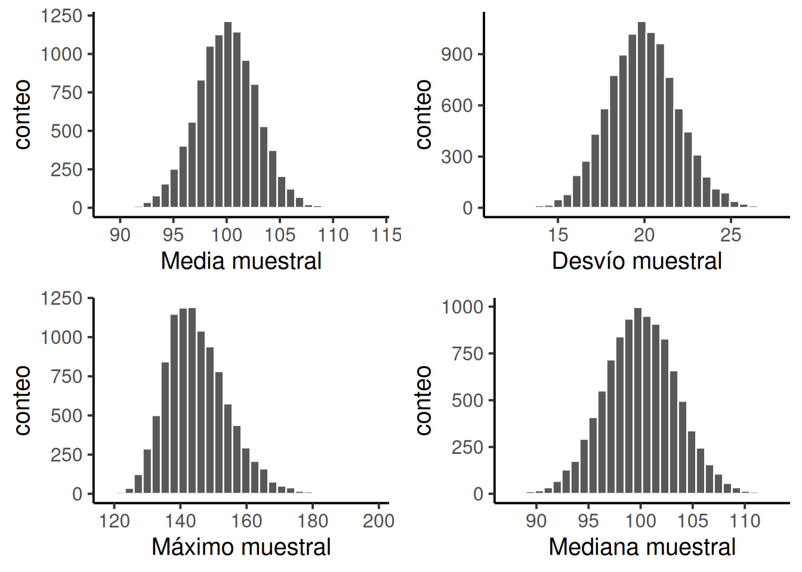
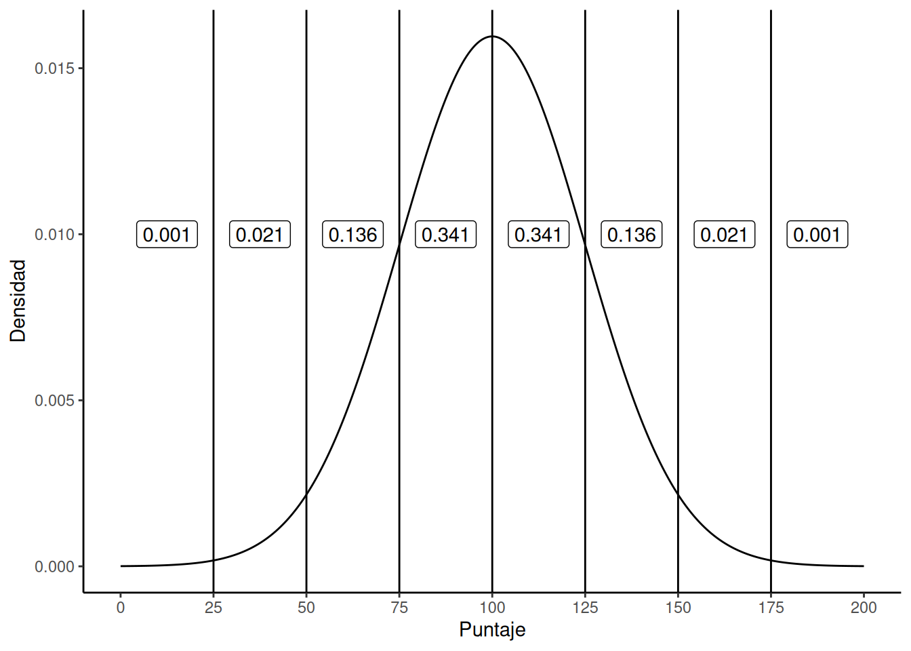

5 Probabilidad, muestreo y estimación
Chapter notes
Sections 4.1 & 4.9 - Adapted text by Danielle Navarro Section 4.10 - 4.11 & 4.13 - Mix of Matthew Crump & Danielle Navarro Section 4.12 - 4.13 - Adapted text by Danielle Navarro
He estudiado muchos idiomas —francés, español y un poco de italiano, pero nadie me dijo que la estadística era una lengua extranjera. —Charmaine J. Forde
Hasta ahora en el libro, hablamos sobre algunas de las ideas clave en el diseño experimental, y comentamos un poco cómo podés resumir un conjunto de datos. Para muchas personas, eso es todo lo que hay en estadística: se trata de calcular promedios, juntar números, hacer gráficos y poner todo eso en un informe. Algo así como coleccionar estampillas, pero con números. Sin embargo, la estadística abarca mucho más que eso. De hecho, la estadística descriptiva es una de las partes más pequeñas —y menos potentes— de la estadística. La parte más grande y útil de la estadística es que nos da herramientas para hacer inferencias a partir de los datos.
Cuando empezás a pensar en la estadística en estos términos —que está ahí para ayudarnos a sacar conclusiones a partir de los datos—, empezás a ver ejemplos por todas partes. Por ejemplo, acá hay un pequeño extracto de un artículo del Sydney Morning Herald (30 de octubre de 2010):
“Tengo un trabajo difícil”, dijo la Premier en respuesta a una encuesta que reveló que su gobierno es ahora la administración laborista menos popular de la historia de los sondeos, con una intención de voto primaria de apenas el 23 por ciento.
Este tipo de afirmación es totalmente común en los diarios y en la vida cotidiana, pero pensemos por un momento qué implica. Una encuestadora hizo un sondeo —probablemente bastante grande porque pueden pagarlo—. No tengo ganas de buscar el informe original, así que imaginemos que llamaron a 1000 votantes de New South Wales al azar, y que 230 (23%) dijeron que pensaban votar al Partido Laborista Australiano. Para las elecciones federales de 2010, la Comisión Electoral Australiana informó que había 4.610.795 votantes registrados en New South Wales; así que las opiniones de los 4.609.795 votantes restantes (aproximadamente el 99,98%) no las conocemos. Incluso suponiendo que nadie le mintió a la encuestadora, lo único que podemos decir con 100% de certeza es que el voto real está entre 230/4.610.795 (aprox. 0,005%) y 4.610.025/4.610.795 (aprox. 99,83%). Entonces, ¿en qué se basa la encuestadora, el diario y la opinión pública para concluir que el voto al partido es aproximadamente del 23%?
La respuesta es bastante obvia: si llamo a 1000 personas al azar y 230 dicen que votarían a ese partido, parece muy poco probable que sean las únicas 230 personas en toda la población que lo harían. En otras palabras, asumimos que los datos recolectados por la encuestadora representan bastante bien a toda la población. Pero, ¿cuán representativos son? ¿Nos sorprendería descubrir que el verdadero apoyo al partido es en realidad del 24%? ¿Del 29%? ¿Del 37%? Acá es donde la intuición cotidiana empieza a fallar. A nadie le sorprendería un 24%, y a todo el mundo le sorprendería un 37%, pero no es tan fácil decidir si un 29% sería plausible. Necesitamos herramientas más potentes que simplemente mirar los números y adivinar.
La estadística inferencial proporciona las herramientas necesarias para responder ese tipo de preguntas. Y como ese tipo de preguntas están en el corazón del trabajo científico, ocupan la mayor parte de cualquier curso introductorio de estadística o métodos de investigación. Y como ese tipo de preguntas están en el corazón del trabajo científico, ocupan la mayor parte de cualquier curso introductorio de estadística o métodos de investigación. Sin embargo, nuestras herramientas para hacer inferencias estadísticas están: 1. construidas sobre la base de la teoría de la probabilidad, y 2. requieren entender cómo se comportan las muestras cuando se extraen de distribuciones (definidas por la teoría de la probabilidad…). Así que este capítulo tiene dos partes principales: una breve introducción a la teoría de la probabilidad, y una introducción al muestreo a partir de distribuciones.
5.1 ¿En qué se diferencian la probabilidad y la estadística?
Antes de empezar a hablar de teoría de la probabilidad, conviene dedicar un momento a pensar en la relación entre probabilidad y estadística. Las dos disciplinas están muy relacionadas, pero no son lo mismo. La teoría de la probabilidad es “la doctrina del azar”. Es una rama de las matemáticas que te dice con qué frecuencia ocurren distintos tipos de eventos. Por ejemplo, todas estas preguntas pueden responderse usando teoría de la probabilidad:
¿Cuál es la probabilidad de que una moneda salga cara 10 veces seguidas?
Si tiro dos dados de seis caras, ¿qué tan probable es que salgan dos seises?
¿Qué probabilidad hay de que cinco cartas extraídas al azar de un mazo bien mezclado sean todas corazones?
¿Qué chance tengo de ganar la lotería?
Fijate que todas estas preguntas tienen algo en común. En cada caso la “verdad del mundo” es conocida, y mi pregunta se relaciona con “qué clase de eventos” van a ocurrir. En la primera pregunta, sabemos que la moneda es justa, así que hay un 50% de probabilidad de que cualquier lanzamiento individual salga cara. En la segunda, sabemos que la chance de sacar un 6 con un dado es 1 en 6. En la tercera, sabemos que el mazo está bien mezclado. Y en la cuarta, sabemos que la lotería sigue reglas específicas. Ya te hacés una idea. Lo importante es que las preguntas de probabilidad parten de un modelo conocido del mundo, y usamos ese modelo para hacer algunos cálculos.
El modelo subyacente puede ser muy simple. Por ejemplo, en el caso de la moneda, podemos escribir el modelo así: \(P(\text{cara}) = 0.5\) que se lee: “la probabilidad de que salga cara es 0.5”.
Como veremos más adelante, así como los porcentajes van de 0% a 100%, las probabilidades son simplemente números que van de 0 a 1. Cuando usamos este modelo para responder la primera pregunta, en realidad no sabemos exactamente qué va a pasar. Tal vez salgan 10 caras, como plantea la pregunta. Pero también podrían salir 3 caras. Eso es lo importante: en la teoría de la probabilidad, el modelo es conocido, pero los datos no lo son.
Eso es la probabilidad. ¿Y la estadística? Las preguntas estadísticas funcionan al revés. En estadística, no sabemos cómo es el mundo en realidad. Lo único que tenemos son datos, y a partir de ellos queremos aprender la verdad sobre el mundo. Las preguntas estadísticas suelen ser más del tipo:
Si mi amiga lanza una moneda 10 veces y sale cara todas las veces, ¿me está haciendo trampa?
Si saco cinco cartas y todas son corazones, ¿qué tan probable es que el mazo estuviera mezclado?
Si la pareja del comisario de la lotería gana la lotería, ¿qué tan probable es que esté arreglada?
Esta vez, lo único que tenemos son los datos. Lo que sé es que vi a mi amiga lanzar la moneda 10 veces y salió cara todas las veces. Y lo que quiero inferir es si debería concluir que lo que acabo de ver fue realmente una moneda justa siendo lanzada 10 veces seguidas, o si debería sospechar que mi amiga me está haciendo una trampa. Los datos que tengo se ven así:
H H H H H H H H H Hy lo que estoy intentando hacer es decidir en cuál “modelo del mundo” debería confiar. Si la moneda es justa, entonces el modelo que debería adoptar es uno en el que la probabilidad de que salga cara es 0.5; es decir, \(P(\text{cara}) = 0.5\) Si la moneda no es justa, entonces debería concluir que la probabilidad de que salga cara no es 0.5, lo que escribiríamos como \(P(\text{cara}) \neq 0.5\). En otras palabras, el problema de la inferencia estadística consiste en darme cuenta cuál de estos modelos de probabilidad es el correcto. Está claro que la pregunta estadística no es la misma que la pregunta de probabilidad, pero están profundamente relacionadas. Por eso, una buena introducción a la teoría estadística comienza con una discusión sobre qué es la probabilidad y cómo funciona.
5.2 ¿Qué significa probabilidad?
Empecemos con la primera de estas preguntas: ¿qué es la “probabilidad”? Puede parecerte sorprendente, pero aunque los estadísticos y matemáticos (en general) están de acuerdo sobre cuáles son las reglas de la probabilidad, hay mucho menos consenso sobre qué significa realmente la palabra. Suena raro, porque todos usamos palabras como “chance”, “posibilidad” y “probable” sin problema, y no parece una pregunta difícil de responder. Si tuvieras que explicarle a una persona de cinco años qué es la probabilidad, probablemente te las arreglarías bastante bien. Pero si alguna vez viviste esa situación en la vida real, tal vez te fuiste con la sensación de que no lo explicaste tan bien, y que —como pasa con muchos conceptos cotidianos— no sabés realmente de qué se trata.
Así que voy a intentarlo. Supongamos que quiero apostar en un partido de fútbol entre dos equipos de robots, Arduino Arsenal y C Milan. Después de pensarlo, decido que hay una probabilidad del 80% de que Arduino Arsenal gane. ¿Qué quiero decir con eso? Acá hay tres posibles interpretaciones:
Son equipos robot, así que puedo hacerlos jugar muchas veces. Si lo hiciera, Arduino Arsenal ganaría 8 de cada 10 partidos, en promedio.
Para cualquier partido en particular, solo estaría de acuerdo en que apostar es “justo” si una apuesta de $1 a favor de C Milan paga $5 (es decir, recupero mi $1 más $4 de ganancia), al igual que lo sería una apuesta de $4 a favor de Arduino Arsenal (recupero mis $4 más $1 de ganancia).
Mi “creencia” o “confianza” subjetiva en que gana Arduino Arsenal es cuatro veces más fuerte que la que tengo en que gane C Milan.
Todas estas opciones parecen razonables. Sin embargo, no son idénticas, y no todos los estadísticos estarían de acuerdo con todas. La razón es que existen diferentes ideologías estadísticas (¡sí, en serio!), y dependiendo de cuál suscribas, podrías decir que algunas de esas afirmaciones no tienen sentido o son irrelevantes. En esta sección, voy a introducir brevemente los dos enfoques principales que existen en la literatura. No son los únicos, pero sí son los más importantes.
5.2.1 La visión frecuentista
El primero de los dos enfoques principales, y el más dominante en estadística, se conoce como la visión frecuentista, que define la probabilidad como una frecuencia a largo plazo. Supongamos que empezamos a lanzar una moneda justa, una y otra vez. Por definición, es una moneda en la que \(P(H) = 0.5\). ¿Qué podríamos observar? Una posibilidad es que los primeros 20 lanzamientos se vean así:
T, H, H, H, H, T, T, H, H, H, H, T, H, H, T, T, T, T, T, HEn este caso, 11 de los 20 lanzamientos (55%) salieron cara. Ahora supongamos que fui llevando la cuenta del número de caras (que voy a llamar $ N_H $) en los primeros $ N $ lanzamientos, y que cada vez calculo la proporción de caras $ N_H / N $. Esto es lo que obtendría (¡sí, de verdad lancé monedas para obtener esto!):
| número de lanzamientos | 1 | 2 | 3 | 4 | 5 | 6 | 7 | 8 | 9 | 10 |
|---|---|---|---|---|---|---|---|---|---|---|
| número de caras | 0 | 1 | 2 | 3 | 4 | 4 | 4 | 5 | 6 | 7 |
| proporción | .00 | .50 | .67 | .75 | .80 | .67 | .57 | .63 | .67 | .70 |
| número de lanzamientos | 11 | 12 | 13 | 14 | 15 | 16 | 17 | 18 | 19 | 20 |
|---|---|---|---|---|---|---|---|---|---|---|
| número de caras | 8 | 8 | 9 | 10 | 10 | 10 | 10 | 10 | 10 | 11 |
| proporción | .73 | .67 | .69 | .71 | .67 | .63 | .59 | .56 | .53 | .55 |
Fijate que al principio de la secuencia, la proporción de caras fluctúa bastante, empezando en .00 y subiendo hasta .80. Más adelante, da la impresión de que se estabiliza, con valores que se acercan cada vez más al valor “correcto” de 0.50. Esta es la definición frecuentista de probabilidad en pocas palabras: lanzá una moneda justa muchas veces, y a medida que $ N $ crece (se acerca al infinito, denotado $ N $), la proporción de caras converge a 50%. Hay algunas sutilezas técnicas que le importan a los matemáticos, pero en términos cualitativos, así es como los frecuentistas definen la probabilidad. Por supuesto, no tengo un número infinito de monedas, ni la paciencia infinita para lanzarlas eternamente. Pero sí tengo una computadora, y las computadoras son excelentes para tareas repetitivas. Así que le pedí a la computadora que simulara lanzar una moneda 1000 veces, y luego grafiqué lo que pasa con la proporción $ N_H / N $ a medida que $ N $ aumenta. En realidad, lo hice cuatro veces, solo para asegurarme de que no fuera casualidad. Los resultados se muestran en la Figura 5.1. Como podés ver, la proporción de caras observadas eventualmente deja de fluctuar, y se estabiliza. Cuando eso ocurre, el número al que se estabiliza es la verdadera probabilidad de cara.
La definición frecuentista de probabilidad tiene algunas características deseables. Primero, es objetiva: la probabilidad de un evento está necesariamente anclada en el mundo. La única forma en que las afirmaciones probabilísticas tienen sentido es si se refieren a (una secuencia de) eventos que ocurren en el universo físico. Segundo, no es ambigua: dos personas que observan la misma secuencia de eventos y tratan de calcular la probabilidad de un evento, necesariamente deben llegar a la misma respuesta.
Sin embargo, también tiene características indeseables. Las secuencias infinitas no existen en el mundo físico. Supongamos que agarrás una moneda de tu bolsillo y empezás a lanzarla. Cada vez que cae, impacta contra el suelo. Cada impacto desgasta un poco la moneda; eventualmente, la moneda se va a destruir. Entonces, uno podría preguntarse si realmente tiene sentido fingir que una “secuencia infinita” de lanzamientos de moneda es un concepto significativo, o incluso objetivo. No podemos decir que una “secuencia infinita” de eventos sea algo real en el universo físico, porque el universo físico no permite nada infinito.
Más seriamente, la definición frecuentista tiene un alcance muy limitado. Hay un montón de cosas a las que les asignamos probabilidades en el lenguaje cotidiano, pero que no pueden (ni siquiera en teoría) ser representadas como una secuencia hipotética de eventos. Por ejemplo, si una meteoróloga aparece en la tele y dice: “la probabilidad de que llueva en Adelaida el 2 de noviembre de 2048 es del 60%”, las personas aceptamos esa afirmación sin problemas. Pero no está claro cómo definir eso en términos frecuentistas. Solo hay una ciudad de Adelaida, y solo hay un 2 de noviembre de 2048. No hay ninguna secuencia infinita de eventos acá: es algo que ocurre una sola vez. Desde la perspectiva frecuentista, está prohibido hacer afirmaciones de probabilidad sobre un evento único. Para un frecuentista, mañana o va a llover o no va a llover; no hay ninguna “probabilidad” asociada a un evento no repetible. Ahora bien, hay que decir que los frecuentistas tienen algunos trucos muy ingeniosos para sortear esta limitación. Una posibilidad es que lo que quiso decir la meteoróloga sea algo así como: “Hay una categoría de días para los que yo predigo un 60% de chance de lluvia; si miramos sólo esos días en los que hice esa predicción, entonces en el 60% de ellos efectivamente llueve”. Es una forma rara de pensarlo y contraria a la intuición, pero sí: los frecuentistas hacen esto a veces.
5.2.2 La visión bayesiana
La visión bayesiana de la probabilidad también se llama la visión subjetivista, y es una posición minoritaria entre los estadísticos, pero que ha ido ganando terreno de forma sostenida en las últimas décadas. Hay muchas variantes del bayesianismo, lo que dificulta definir exactamente cuál es “la” visión bayesiana. La forma más común de pensar en la probabilidad subjetiva es definir la probabilidad de un evento como el grado de creencia que una persona (o agente racional e inteligente) asigna a la verdad de ese evento. Desde esta perspectiva, las probabilidades no existen en el mundo, sino que viven en los pensamientos y suposiciones de las personas (o seres inteligentes). Sin embargo, para que este enfoque funcione, necesitamos alguna forma de operacionalizar ese “grado de creencia”. Una manera de hacerlo es formalizarlo en términos de “apuestas racionales”, aunque existen otras formas. Supongamos que creo que hay un 60% de probabilidad de que mañana llueva. Si alguien me ofrece una apuesta que dice: si llueve, ganás $5; si no llueve, perdés $5, desde mi perspectiva es una buena apuesta. En cambio, si creo que hay solo un 40% de probabilidad de lluvia, entonces esa misma apuesta sería una mala idea. Así, podemos operacionalizar el concepto de “probabilidad subjetiva” en función de qué apuestas estoy dispuesto a aceptar.
¿Cuáles son las ventajas y desventajas de este enfoque bayesiano? La principal ventaja es que permite asignar probabilidades a cualquier evento que queramos. No es necesario que el evento sea repetible. La principal desventaja (para muchas personas) es que no podemos ser completamente objetivos: al asignar una probabilidad, es necesario especificar una entidad que posea el grado de creencia pertinente. Esa entidad puede ser una persona, un extraterrestre, un robot, o incluso un estadístico, pero tiene que haber un agente inteligente que tenga creencias. Para muchos esto resulta incómodo: hace que la probabilidad parezca arbitraria. Mientras que el enfoque bayesiano exige que el agente en cuestión sea racional (es decir, que respete las reglas de la probabilidad), permite que cada quien tenga sus propias creencias; yo puedo creer que la moneda está equilibrada y vos no, y aun así ambos ser racionales. La visión frecuentista no permite que dos observadores asignen probabilidades distintas al mismo evento: si eso ocurre, al menos uno de los dos está equivocado. La perspectiva bayesiana no impone esa restricción. Dos personas con conocimientos previos diferentes pueden, de forma legítima, tener creencias distintas sobre un mismo evento. En resumen, mientras que la visión frecuentista a veces se considera demasiado restrictiva (prohíbe asignar probabilidades a muchas cosas que nos interesa evaluar), la visión bayesiana a veces se percibe como demasiado amplia (permite demasiadas diferencias entre observadores).
5.2.3 ¿Cuál es la diferencia? ¿Y quién tiene razón?
Ahora que viste cada una de estas dos perspectivas por separado, conviene asegurarse de que podés compararlas. Volvé al partido hipotético de fútbol robot al comienzo de la sección. ¿Qué pensás que dirían un frecuentista y un bayesiano sobre estas tres afirmaciones? ¿Cuál de ellas consideraría un frecuentista como la definición correcta de probabilidad? ¿Y cuál aceptaría un bayesiano? ¿Algunas de estas afirmaciones carecerían de sentido para un frecuentista o para un bayesiano? Si entendiste bien las dos perspectivas, deberías tener una idea de cómo responder esas preguntas.
Bien, suponiendo que entendiste la diferencia, tal vez te estés preguntando cuál de ellas es la correcta. Sinceramente, no sé si hay una respuesta correcta. Hasta donde puedo decir, no hay nada matemáticamente incorrecto en la forma en que los frecuentistas piensan las secuencias de eventos, y tampoco hay nada matemáticamente incorrecto en la forma en que los bayesianos definen las creencias de un agente racional. De hecho, cuando uno se mete en los detalles, los bayesianos y los frecuentistas en realidad están de acuerdo en muchas cosas. Muchos métodos frecuentistas llevan a decisiones que los bayesianos aceptarían como consistentes con un agente racional. Y muchos métodos bayesianos tienen muy buenas propiedades frecuentistas.
En general, yo soy pragmática, así que uso cualquier método estadístico en el que confíe. Resulta que eso me hace preferir los métodos bayesianos, por razones que voy a explicar hacia el final del libro, pero no estoy fundamentalmente en contra de los métodos frecuentistas. No todos son tan relajados. Por ejemplo, pensemos en Sir Ronald Fisher, una de las figuras más importantes de la estadística del siglo XX y un ferviente opositor de todo lo bayesiano, cuyo artículo sobre los fundamentos matemáticos de la estadística se refiere a la probabilidad bayesiana como “una selva impenetrable [que] detiene el progreso hacia la precisión de los conceptos estadísticos” Fisher (1922, 311). O el psicólogo Paul Meehl, quien sugiere que confiar en métodos frecuentistas podría convertirte en “un libertino intelectual potente pero estéril, que deja a su paso alegre una larga estela de doncellas seducidas, pero ninguna descendencia científica viable” Meehl (1967, 114). La historia de la estadística, como podés ver, no carece de entretenimiento.
5.3 Teoría básica de la probabilidad
Más allá de las discusiones ideológicas entre bayesianos y frecuentistas, resulta que en general hay bastante consenso sobre las reglas que deben seguir las probabilidades. Hay muchas maneras de llegar a estas reglas. El enfoque más común se basa en el trabajo de Andrey Kolmogorov, uno de los grandes matemáticos soviéticos del siglo XX. No voy a entrar en demasiados detalles, pero voy a intentar darte una idea general de cómo funciona. Y para hacerlo, voy a tener que hablar de mis pantalones.
5.3.1 Introducción a las distribuciones de probabilidad
Una de las verdades perturbadoras de mi vida es que solo tengo cinco pares de pantalones: tres jeans, la parte de abajo de un traje, y un pantalón deportivo. Más triste aún: les puse nombre. Los llamo $ X_1 $, $ X_2 $, $ X_3 $, $ X_4 $ y $ X_5 $. De verdad lo hago: por eso me dicen “Señor Imaginativo”. Cada día, elijo exactamente un par de pantalones para usar. Ni yo soy tan tonto como para tratar de usar dos al mismo tiempo, y gracias a años de entrenamiento ya no salgo de casa sin pantalones. Si quisiera describir esta situación usando el lenguaje de la teoría de la probabilidad, diría que cada par de pantalones (es decir, cada $ X $) es un evento elemental. La característica clave de los eventos elementales es que cada vez que hacemos una observación (por ejemplo, cada vez que me pongo un par de pantalones), el resultado será uno y solo uno de esos eventos. Como dije, hoy en día siempre uso exactamente un par, así que mis pantalones cumplen con esa condición. De forma similar, al conjunto de todos los posibles eventos se lo llama espacio muestral. Es verdad que algunas personas lo llamarían “guardarropa”, pero eso es porque se niegan a pensar en mis pantalones desde una perspectiva probabilística. Triste.
Bien, ahora que tenemos un espacio muestral (un guardarropa), formado por varios eventos elementales (pantalones), lo que queremos hacer es asignar una probabilidad a cada uno de esos eventos. Para un evento $ X $, la probabilidad de ese evento $ P(X) $ es un número entre 0 y 1. Cuanto mayor es el valor de $ P(X) $, más probable es que ocurra ese evento. Por ejemplo: - Si $ P(X) = 0 $, significa que el evento $ X $ es imposible (nunca uso ese pantalón). - Si $ P(X) = 1 $, significa que el evento $ X $ es seguro (siempre uso ese pantalón). - Valores de probabilidad intermedios significan que a veces uso ese pantalón. Por ejemplo, si $ P(X) = 0.5 $, significa que uso ese pantalón la mitad del tiempo.
A esta altura, ya casi terminamos. Lo último que necesitamos reconocer es que “algo siempre ocurre”. Cada vez que me pongo pantalones, efectivamente termino con un par puesto (una locura, ¿no?). Esta afirmación algo trillada quiere decir, en términos probabilísticos, que las probabilidades de todos los eventos elementales deben sumar 1. Esto se conoce como la ley de probabilidad total, aunque a nadie le importe demasiado. Más importante, si se cumplen estos requisitos, lo que tenemos es una distribución de probabilidad. Por ejemplo, esta es una distribución de probabilidad
| ¿Qué pantalón? | Etiqueta | Probabilidad |
|---|---|---|
| Jean azul | $ X_1 $ | $ P(X_1) = 0.5 $ |
| Jean gris | $ X_2 $ | $ P(X_2) = 0.3 $ |
| Jean negro | $ X_3 $ | $ P(X_3) = 0.1 $ |
| Pantalón de traje | $ X_4 $ | $ P(X_4) = 0 $ |
| Pantalón deportivo | $ X_5 $ | $ P(X_5) = 0.1 $ |
Cada uno de estos eventos tiene una probabilidad que está entre 0 y 1, y si sumamos todas las probabilidades, el total es 1. Genial. Incluso podemos hacer un lindo gráfico de barras para visualizar esta distribución, como se muestra en la Figura 5.2. Y en este punto, todos logramos algo. Vos aprendiste qué es una distribución de probabilidad, y yo por fin encontré la forma de hacer un gráfico que trata exclusivamente sobre mis pantalones. ¡Ganamos todos!

La única otra cosa que necesito señalar es que la teoría de la probabilidad también te permite hablar de eventos no elementales, además de los elementales. La forma más fácil de ilustrar esto es con un ejemplo. En el caso de los pantalones, es perfectamente válido referirse a la probabilidad de que use jeans. En este escenario, decimos que el evento “Dan usa jeans” ocurre si el evento elemental que ocurrió fue uno de los apropiados; en este caso, “jean azul”, “jean negro” o “jean gris”. En términos matemáticos, definimos el evento “jeans” $ E $ como el conjunto de eventos elementales $ (X_1, X_2, X_3) $. Si ocurre cualquiera de esos eventos, entonces se dice que ocurrió $ E $. Una vez definida así la $ E $, es muy fácil calcular la probabilidad $ P(E) $: simplemente sumamos todo. En este caso:
\[ P(E) = P(X_1) + P(X_2) + P(X_3) \]
Y como las probabilidades de jean azul, gris y negro son 0.5, 0.3 y 0.1 respectivamente, la probabilidad de que use jeans es igual a 0.9.
A esta altura tal vez estés pensando que todo esto es increíblemente obvio y simple, y tenés razón. Lo único que hicimos fue envolver algunas intuiciones de sentido común con un poco de matemática básica. Sin embargo, a partir de estos comienzos simples se pueden construir herramientas matemáticas extremadamente poderosas. Definitivamente no voy a entrar en esos detalles en este libro, pero lo que sí voy a hacer es listar algunas otras reglas que las probabilidades deben cumplir. Estas reglas se pueden derivar de los supuestos básicos que acabamos de ver, pero como no las vamos a usar directamente en este libro, no me voy a detener en eso.
| Evento | Notación | = | Regla |
|---|---|---|---|
| no \(A\) | \(P(\neg A)\) | = | \(1 - P(A)\) |
| \(A\) o \(B\) | \(P(A \cup B)\) | = | \(P(A) + P(B) - P(A \cap B)\) |
| \(A\) y \(B\) | \(P(A \cap B)\) | = | \(P(A|B) \cdot P(B)\) |
Ahora que tenemos la capacidad de “definir” eventos no elementales en términos de eventos elementales, en realidad podemos usar eso para construir (o, si querés sonar matemáticamente refinado, “derivar”) algunas de las otras reglas de probabilidad. Estas reglas están listadas arriba, y aunque estoy bastante seguro de que muy pocos lectores realmente están interesados en cómo se construyen, te las voy a mostrar igual: aunque sea aburrido y probablemente nunca les encuentres mucho uso práctico, si lo leés un par de veces y tratás de entender cómo funciona, vas a ver que la probabilidad deja de parecer tan misteriosa, y con suerte te va a intimidar menos. Así que ahí vamos. Primero, para construir las reglas voy a necesitar un espacio muestral $ X $ compuesto por un conjunto de eventos elementales $ x $, y dos eventos no elementales que voy a llamar $ A $ y $ B $. Supongamos que:
\[ \begin{array}{rcl} X &=& (x_1, x_2, x_3, x_4, x_5) \\ A &=& (x_1, x_2, x_3) \\ B &=& (x_3, x_4) \end{array} \]
Para hacerlo más concreto, supongamos que todavía estamos hablando de la distribución de pantalones. Si es así, $ A $ correspondería al evento “jeans”, y $ B $ al evento “negro”:
\[ \begin{array}{rcl} \text{“jeans”} &=& (\text{“jean azul”}, \text{“jean gris”}, \text{“jean negro”}) \\ \text{“negro”} &=& (\text{“jean negro”}, \text{“traje negro”}) \end{array} \]
Ahora podemos empezar a comprobar las reglas que figuran en la tabla.
En la primera línea, la tabla dice que: $ P(A) = 1 - P(A)$ y lo que significa esto es que la probabilidad de “no $ A $” es igual a 1 menos la probabilidad de $ A $. Con un poco de reflexión (y un ejemplo tedioso) se vuelve evidente por qué esto tiene que ser verdad. Si $ A $ corresponde al evento de que me pongo jeans (es decir, que ocurre alguno de los eventos $ x_1 $, $ x_2 $ o $ x_3 $), entonces la única definición razonable de “no $ A $” (que se denota matemáticamente como $ A $) es decir que $ A $ consiste en todos los eventos elementales que no pertenecen a $ A $. En el caso de los pantalones, eso significa que: \[ \neg A = (x_4, x_5) \] o, dicho en español: “no jeans” incluye todos los pantalones que no son jeans (es decir, el pantalón de traje negro y el pantalón deportivo azul). Por lo tanto, cada uno de los eventos elementales pertenece o bien a $ A $, o bien a $ A $, pero no a ambos. Bien, entonces reorganicemos lo anterior: \[P(\neg A) + P(A) = 1\] que no es más que una forma matemática de decir: o uso jeans, o no uso jeans; la probabilidad de “no jeans” más la probabilidad de “jeans” es igual a 1.
Matemáticamente:
\[ \begin{array}{rcl} P(\neg A) &=& P(x_4) + P(x_5) \\ P(A) &=& P(x_1) + P(x_2) + P(x_3) \end{array} \]
así que:
\[ \begin{array}{rcl} P(\neg A) + P(A) &=& P(x_1) + P(x_2) + P(x_3) + P(x_4) + P(x_5) \\ &=& \sum_{x \in X} P(x) \\ &=& 1 \end{array} \] Excelente. Todo parece funcionar.
“Guau”, te escucho decir. “Todo esto para decirme lo increíblemente obvio”. Y tenés razón: esto es increíblemente obvio. El propósito de la teoría de la probabilidad es formalizar y matematizar unas pocas intuiciones de sentido común. Así que sigamos un poco más con esta línea de razonamiento. En la sección anterior definí un evento correspondiente a no A, que denoté como $ A \(. Ahora vamos a definir dos nuevos eventos que corresponden a conceptos cotidianos importantes: **\) A $ y $ B \(**, y **\) A $ o $ B $**. Específicamente:
| Afirmación en español | Notación matemática |
|---|---|
| “$ A $ y $ B $” ocurren ambos | $ A B $ |
| ocurre al menos uno: “$ A $ o $ B $” | $ A B $ |
Ya que $ A $ y $ B $ están definidos en términos de nuestros eventos elementales (los $ x $s), necesitamos describir también $ A B $ y $ A B $ en términos de nuestros eventos elementales. ¿Podemos hacerlo? ¡Sí que podemos! La única forma en que ocurran ambos eventos, $ A $ y $ B $, es que el evento elemental observado pertenezca tanto a $ A $ como a $ B \(. Así que "\)A B$” incluye solamente aquellos eventos elementales que pertenecen a \(A\) y \(B\)…
\[ \begin{array}{rcl} A &=& (x_1, x_2, x_3) \\ B &=& (x_3, x_4) \\ A \cap B &=& (x_3) \end{array} \] Es decir, la única forma en que pueda estar usando “jeans” ($ x_1, x_2, x_3 \() y “pantalón negro” (\) x_3, x_4 \() al mismo tiempo, es que esté usando los “jeans negros” (\) x_3 $). Otro triunfo para lo absolutamente obvio.
A esta altura, no te va a sorprender para nada la definición de $ A B $, aunque probablemente te parezca increíblemente aburrida. La única forma en que puedo estar usando “jeans” o “pantalón negro” es si el pantalón elemental que realmente uso pertenece a $ A $, o a $ B $, o a ambos. Así que:
\[ \begin{array}{rcl} A &=& (x_1, x_2, x_3) \\ B &=& (x_3, x_4) \\ A \cup B &=& (x_1, x_2, x_3, x_4) \end{array} \]
Vaaamooooooooo!!!! Matemáticas, sabelo!
Entonces, ya definimos qué queremos decir con $ A B $ y $ A B \(. Ahora asignemos probabilidades a esos eventos. Más específicamente, vamos a verificar la regla que dice que:\)$ P(A B) = P(A) + P(B) - P(A B) $$
Usando las definiciones anteriores, sabemos que: \(A \cup B = (x_1, x_2, x_3, x_4)\), entonces \[ P(A \cup B) = P(x_1) + P(x_2) + P(x_3) + P(x_4) \]
y usando el hecho de que sabemos qué eventos elementales pertenecen a $ A $, $ B $, y $ A B \(, tenemos:\)$
\[\begin{array}{rcl} P(A) &=& P(x_1) + P(x_2) + P(x_3) \\ P(B) &=& P(x_3) + P(x_4) \\ P(A \cap B) &=& P(x_3) \end{array}\]\[ y por lo tanto: \]
\[\begin{array}{rcl} P(A) + P(B) - P(A \cap B) &=& P(x_1) + P(x_2) + P(x_3) + P(x_3) + P(x_4) - P(x_3) \\ &=& P(x_1) + P(x_2) + P(x_3) + P(x_4) \\ &=& P(A \cup B) \end{array}\]$$
Listo.
El próximo concepto que necesitamos definir es la notación “$ B $ dado $ A $”, que se escribe típicamente como $ B A $. Esto es lo que quiero decir: supongamos que me levanto una mañana y me pongo un pantalón. Ocurre un evento elemental $ x $. Supongamos que le grito a mi esposa (que está en la otra habitación, y no puede ver qué pantalón me puse): “¡Hoy estoy usando jeans!”. Asumiendo que ella me cree, entonces sabe que $ A $ es verdadero. Dado que sabe que ocurrió $ A $, ¿cuál es la probabilidad condicional de que también sea cierto $ B $? Bueno, pensemos qué información tiene. Estas son las cosas que sabe:
Los eventos que no son jeans son imposibles. Si $ A $ es verdadero, entonces sabemos que los únicos eventos elementales que pueden haber ocurrido son $ x_1 $, $ x_2 $ y $ x_3 $ (o sea, los jeans). Los eventos no jeans, $ x_4 $ y $ x_5 $, ahora son imposibles y deben tener probabilidad cero. En otras palabras, nuestro espacio muestral se ha restringido a los eventos jeans. Pero sigue siendo cierto que la suma de las probabilidades de estos eventos debe ser 1: sabemos con certeza que estoy usando jeans.
Ella no aprendió nada sobre qué jeans estoy usando. Antes de que yo anunciara que estoy usando jeans, ella ya sabía que era cinco veces más probable que estuviera usando jeans azules ($ P(x_1) = 0.5 \() que jeans negros (\) P(x_3) = 0.1 $). Mi anuncio no cambia eso… no dije nada sobre el color, así que la proporción $ P(x_1) / P(x_3) $ se mantiene igual, con un valor de 5.
Solo hay una forma de satisfacer estas restricciones: asignar probabilidad cero a los eventos imposibles (es decir, \(P(x | A) = 0\) si \(x\) no está en \(A\)), y luego dividir las probabilidades de todos los demás por \(P(A)\). En este caso, como \(P(A) = 0.9\), dividimos entre 0.9. Esto da:
| ¿Qué pantalón? | Evento elemental | Prob. original ( P(x) ) | Nueva prob. ( P(x A) ) |
|---|---|---|---|
| Jean azul | ( x_1 ) | 0.5 | 0.556 |
| Jean gris | ( x_2 ) | 0.3 | 0.333 |
| Jean negro | ( x_3 ) | 0.1 | 0.111 |
| Traje negro | ( x_4 ) | 0 | 0 |
| Pantalón deportivo | ( x_5 ) | 0.1 | 0 |
En términos matemáticos, decimos que: $ P(x A) = x A, P(x A) = 0 x A $
Por lo tanto:
\[ \begin{array}{rcl} P(B \mid A) &=& P(x_3 \mid A) + P(x_4 \mid A) \\\\ &=& \displaystyle \frac{P(x_3)}{P(A)} + 0 \\\\ &=& \displaystyle \frac{P(x_3)}{P(A)} \end{array} \]
Y recordando que \(A \cap B = (x_3)\) , podemos escribir esto como: $ P(B A) = $
Y si multiplicamos ambos lados por ( P(A) ), obtenemos:
$ P(A B) = P(B A) P(A) $ que es la tercera regla que habíamos listado en la tabla anterior.
5.4 La distribución binomial
Como te podés imaginar, las distribuciones de probabilidad varían muchísimo, y hay una enorme cantidad de distribuciones ahí afuera. Sin embargo, no todas son igual de importantes. De hecho, la gran mayoría del contenido de este libro se basa en una de cinco distribuciones: la distribución binomial, la distribución normal, la distribución ( t ), la distribución ( ^2 ) (“ji-cuadrado”) y la distribución ( F ). Dicho esto, lo que voy a hacer en las próximas secciones es darte una breve introducción a esas cinco, prestando especial atención a la binomial y a la normal. Voy a empezar con la distribución binomial, porque es la más sencilla de las cinco.
5.4.1 Introducción a la binomial
La teoría de la probabilidad se originó como un intento de describir cómo funcionan los juegos de azar, así que parece apropiado que nuestra discusión sobre la distribución binomial empiece con tirar dados y lanzar monedas. Imaginá un experimento simple: en mi mano tengo 20 dados idénticos de seis caras. En una de las caras de cada dado hay una calavera; las otras cinco están en blanco. Si lanzo los 20 dados, ¿cuál es la probabilidad de que salgan exactamente 4 calaveras? Asumiendo que los dados son justos, sabemos que la chance de que cualquier dado salga calavera es 1 en 6; dicho de otra forma, la probabilidad de calavera para un solo dado es aproximadamente ( 0{,}167 ). Con eso ya tenemos suficiente información para responder la pregunta, así que veamos cómo se hace.
Como siempre, vamos a introducir algunos nombres y notación. Vamos a usar ( N ) para referirnos al número de lanzamientos en nuestro experimento; esto es lo que se conoce como el parámetro de tamaño de la distribución binomial. También vamos a usar ( ) para referirnos a la probabilidad de éxito de un solo lanzamiento, es decir, la probabilidad de que salga calavera. Finalmente, usaremos ( X ) para referirnos al resultado de nuestro experimento, es decir, la cantidad de calaveras que obtengo al lanzar los dados. Como el valor concreto de ( X ) depende del azar, nos referimos a él como una variable aleatoria. Con toda esta terminología y notación, podemos expresar el problema de forma un poco más precisa: la cantidad que queremos calcular es la probabilidad de que ( X = 4 ), dado que sabemos que ( = 0{,}167 ) y ( N = 20 ). La forma general de lo que queremos calcular se puede escribir como:
$ P(X , N) $
y nos interesa el caso particular en el que ( X = 4 ), ( = 0{,}167 ) y ( N = 20 ). Hay una última notación que quiero mencionar antes de pasar a cómo resolver el problema. Si quiero decir que ( X ) fue generado aleatoriamente a partir de una distribución binomial con parámetros ( ) y ( N ), lo escribo así:
Sí, sí, ya sé lo que estás pensando: notación, notación, notación. ¿A quién le importa? Muy pocos lectores están acá por la notación, así que mejor sigo y explico cómo usar la distribución binomial. Para eso, la Figura 5.3 muestra las probabilidades binomiales para todos los valores posibles de ( X ) en nuestro experimento con los dados, desde ( X = 0 ) (ninguna calavera) hasta ( X = 20 ) (todas calaveras). Notá que básicamente es un gráfico de barras, y no es distinto del gráfico de “probabilidad de pantalones” que hicimos en Figura 5.2. En el eje horizontal están todos los eventos posibles, y en el eje vertical podemos ver la probabilidad de cada uno de esos eventos. Entonces, la probabilidad de obtener 4 calaveras al lanzar 20 dados es de aproximadamente 0.20 (la respuesta exacta es 0.2022036, como veremos enseguida). En otras palabras, esperarías que eso ocurra alrededor del 20% de las veces que repitas este experimento.
5.4.2 Trabajando con la distribución binomial en R
R tiene una función llamada dbinom que calcula probabilidades binomiales por nosotros. Los argumentos principales de la función son:
x: Un número (o vector de números) que especifica los valores para los que querés calcular la probabilidad.size: Un número que le indica a R el tamaño del experimento.prob: La probabilidad de éxito en un solo intento del experimento.
Entonces, para calcular la probabilidad de obtener 4 calaveras en un experimento de 20 lanzamientos, donde la probabilidad de calavera en cada lanzamiento es 1/6, el comando sería simplemente:
dbinom(x = 4, size = 20, prob = 1/6)[1] 0.2022036Para que veas cómo cambia la distribución binomial cuando alteramos los valores de ( ) y ( N ), supongamos ahora que, en lugar de tirar dados, estoy lanzando monedas. En este caso, el experimento consiste en lanzar una moneda justa repetidamente, y el resultado que me interesa es cuántas veces sale cara. En este escenario, la probabilidad de éxito es ahora ( = 1/2 ). Supongamos que lanzo la moneda ( N = 20 ) veces. En este ejemplo, cambié la probabilidad de éxito, pero mantuve igual el tamaño del experimento. ¿Qué le pasa a la distribución binomial?

Bueno, como se ve en la Figura 5.4 (a), el efecto principal es que la distribución se desplaza, como cabría esperar. Ahora, ¿qué pasa si lanzo la moneda ( N = 100 ) veces? En ese caso, obtenemos la Figura 5.4 (b). La distribución se mantiene más o menos centrada, pero hay más variabilidad en los posibles resultados.
En este punto, probablemente debería explicar el nombre de la función dbinom(). Obviamente, la parte “binom” proviene del hecho de que estamos trabajando con la distribución binomial, pero el prefijo “d” probablemente sea un pequeño misterio. En esta sección voy a dar una explicación parcial: específicamente, voy a explicar por qué existe un prefijo. En cuanto a por qué es precisamente una “d”, vas a tener que esperar hasta la próxima sección. R incluye cuatro funciones para trabajar con la distribución binomial. Estas funciones son dbinom, pbinom, rbinom y qbinom, y cada una calcula una cantidad distinta de interés. No solo eso, R hace lo mismo para todas las distribuciones de probabilidad que implementa. No importa de qué distribución se trate, siempre vas a encontrar una función d, una función p, una función r y una función q.
Veamos qué hace cada una de estas funciones. Primero, las cuatro versiones de la función requieren que le indiques los argumentos size y prob: no importa qué querés que R calcule, siempre necesita saber cuáles son los parámetros de la distribución. Sin embargo, difieren en cuanto a cuál es el otro argumento y cuál es la salida. Así que veámoslas una por una:
La versión
dya la vimos. Se especifica un resultado particularx, y lo que devuelve es la probabilidad de obtener exactamente ese resultado (la “d” viene de density, aunque por ahora podés ignorarlo).La versión
pcalcula la probabilidad acumulada. Se especifica un cuantilq, y te devuelve la probabilidad de obtener un resultado menor o igual aq.La versión
qcalcula los cuantiles de la distribución. Se especifica un valor de probabilidadp, y te devuelve el percentil correspondiente. Es decir, el valor de la variable para el cual hay una probabilidadpde obtener un resultado inferior a ese valor.La versión
res un generador de números aleatorios: generanresultados aleatorios tomados de la distribución.
Esto puede sonar algo abstracto, así que veamos algunos ejemplos concretos. Como ya vimos dbinom, vamos a concentrarnos en las otras tres. Empecemos con pbinom, y volvamos al ejemplo de los dados con calaveras. Recordá: lanzo 20 dados, cada uno tiene una chance de 1 en 6 de mostrar una calavera. Supongamos, en cambio, que quiero saber la probabilidad de obtener 4 o menos calaveras. Podría usar dbinom para calcular la probabilidad exacta de obtener 0, 1, 2, 3 y 4 calaveras, y luego sumar esos valores. Pero hay una forma más rápida: usar la función pbinom. El comando sería:
pbinom(q = 4, size = 20, prob = 1/6)[1] 0.7687492En otras palabras, hay un 76.9% de probabilidad de que al lanzar los 20 dados obtenga 4 calaveras o menos. O, dicho de otra manera, R nos está diciendo que 4 es el percentil 76.9 de esta distribución binomial.
Ahora consideremos la función qbinom. Supongamos que quiero calcular el percentil 75 de la distribución binomial. Siguiendo con el ejemplo de las calaveras, el comando sería:
qbinom(p = 0.75, size = 20, prob = 1/6)[1] 4Mmm. Hay algo raro acá. Pensemos bien esto. Lo que parece decir la función qbinom es que el percentil 75 de la distribución binomial es 4, aunque vimos recién en la función que 4 es en realidad el percentil 76.9. Y la función pbinom es la correcta, te lo prometo. Lo raro acá surge del hecho de que nuestra distribución binomial en realidad no tiene un percentil 75. ¿Por qué no? Bueno, hay un 56.7% de chance de obtener 3 o menos calaveras (podés escribir pbinom(3, 20, 1/6) para comprobarlo), y un 76.9% de chance de obtener 4 o menos calaveras. Entonces, en cierto sentido, el percentil 75 debería estar “entre medio” de 3 y 4 calaveras. ¡Pero eso no tiene sentido! No podés tirar 20 dados y que salgan 3.9 calaveras. Este problema se puede manejar de distintas formas: podrías reportar un valor intermedio (o interpolado, como se dice técnicamente), como 3.9 podrías redondear hacia abajo (a 3) o podrías redondear hacia arriba (a 4).
La función qbinom redondea hacia arriba: si pedís un percentil que no existe literalmente (como el 75 en este ejemplo), R encuentra el valor más pequeño cuyo percentil acumulado sea al menos el que pediste. En este caso, como el “verdadero” percentil 75 (sea lo que sea que eso signifique) está entre 3 y 4 calaveras, R redondea hacia arriba y te da 4. Esta sutileza puede ser molesta, lo admito, pero por suerte solo es un problema en distribuciones discretas como la binomial. Las otras distribuciones de las que voy a hablar (normal, ( t ), ( ^2 ) y ( F )) son todas continuas, así que R siempre puede devolver un cuantil exacto cuando se lo pedís.
Finalmente, tenemos el generador de números aleatorios. Para usar la función rbinom, tenés que especificar cuántas veces querés que R “simule” el experimento usando el argumento n, y te va a generar resultados aleatorios tomados de la distribución binomial. Por ejemplo, si quisiera repetir el experimento de tirar dados 100 veces, puedo hacer que R simule esos resultados así:
rbinom(n = 100, size = 20, prob = 1/6) [1] 4 2 5 3 1 2 6 6 8 2 3 4 3 2 3 3 10 2 5 5 5 0 3 3 2
[26] 5 1 3 5 1 7 2 5 4 6 1 3 1 5 5 4 2 2 3 3 2 3 2 1 5
[51] 5 2 2 3 5 7 4 4 2 5 1 4 2 5 4 2 2 1 1 3 3 5 5 6 2
[76] 2 4 2 5 2 2 3 5 3 6 2 4 7 4 3 5 4 2 6 1 2 4 5 5 1Como podés ver, los números que aparecen son lo que uno esperaría, dada la distribución que se muestra en la Figura 5.3. La mayoría de las veces saco entre 1 y 5 calaveras. Hay muchas sutilezas sobre cómo se generan números aleatorios en una computadora, pero para los fines de este libro no necesitamos preocuparnos demasiado.
5.5 La distribución normal
Aunque la distribución binomial es conceptualmente la más fácil de entender, no es la más importante. Ese honor particular le corresponde a la distribución normal, también conocida como “curva de campana” o “distribución gaussiana”.
knitr::include_graphics("imgs/navarro_img/probability/standardNormal_es.png")Una distribución normal se describe usando dos parámetros: la media de la distribución (( )) y la desviación estándar (( )). La notación que usamos a veces para indicar que una variable ( X ) tiene distribución normal es:
$ X (, ) $
Claro que eso es solo notación. No nos dice nada especialmente interesante sobre la distribución normal en sí. La fórmula matemática de la distribución normal es:
La fórmula es lo suficientemente importante como para que cualquiera que aprenda estadística la mire al menos una vez, pero como este es un texto introductorio, no quiero enfocarme demasiado en eso. En cambio, vamos a ver cómo se puede usar R para trabajar con distribuciones normales. Las funciones en R para la distribución normal son dnorm(), pnorm(), qnorm() y rnorm(). Sin embargo, se comportan exactamente igual que sus equivalentes para la distribución binomial, así que no hay mucho que necesites saber. Lo único que vale la pena señalar es que los argumentos para los parámetros se llaman mean y sd. En casi todo lo demás, no hay más que agregar.
En lugar de enfocarnos en las matemáticas, tratemos de entender qué significa que una variable tenga distribución normal. Para eso, mirá la Figura 5.5, que muestra una distribución normal con media ( = 0 ) y desviación estándar ( = 1 ). Podés ver de dónde viene el nombre “curva de campana”: se parece un poco a una campana. Notá que, a diferencia de los gráficos que dibujé para ilustrar la distribución binomial, la Figura 5.5 muestra una curva suave, no un gráfico tipo histograma. Esto no es una elección arbitraria: la distribución normal es continua, mientras que la binomial es discreta. En el ejemplo anterior, era posible obtener 3 calaveras o 4 calaveras, pero era imposible obtener 3.9 calaveras.
Teniendo eso en cuenta, veamos si podemos desarrollar una intuición de cómo funciona la distribución normal. Primero, vamos a ver qué pasa cuando jugamos con los parámetros de la distribución. Uno de los parámetros que podemos modificar es la media. Esto desplaza la distribución hacia la derecha o hacia la izquierda. La animación en la Figura 5.6 muestra una distribución normal con media = 0, que se va moviendo desde media = 0 hasta media = 5. Notá que, cuando cambiás la media, la forma de la distribución no cambia: simplemente se traslada de izquierda a derecha. En la animación, la curva normal sube y baja un poco, pero eso es solo una característica visual de la animación (además queda lindo así).
En cambio, si aumentamos la desviación estándar manteniendo constante la media, el pico de la distribución se queda en el mismo lugar, pero la distribución se ensancha. La animación en Figura 5.7 muestra lo que pasa cuando empezamos con una desviación estándar pequeña (sd = 0.5), y la aumentamos gradualmente hasta sd = 5. Como podés ver, la distribución se expande y se vuelve más ancha a medida que aumenta la desviación estándar.

Fijate que cuando ensanchamos la distribución, la altura del pico disminuye. Eso tiene que ocurrir: al igual que las alturas de las barras en la distribución binomial debían sumar 1, el área bajo la curva de la distribución normal también debe ser igual a 1. Antes de continuar, quiero señalar una característica importante de la distribución normal. Sin importar cuál sea la media o la desviación estándar específica, el 68.3% del área cae dentro de 1 desviación estándar de la media. De forma similar, el 95.4% cae dentro de 2 desviaciones estándar, y el 99.7% está dentro de 3 desviaciones estándar.
5.5.1 Densidad de probabilidad
Hay algo que estuve intentando ocultar durante toda mi discusión sobre la distribución normal. Algo que algunos libros introductorios directamente omiten por completo. Tal vez tengan razón en hacerlo: esta “cosa” que estoy ocultando es rara y contraintuitiva, incluso según los estándares algo retorcidos que rigen en estadística. Afortunadamente, no es algo que necesites entender a fondo para hacer estadística básica: es algo que empieza a volverse importante más adelante, cuando salís de lo introductorio. Así que si no te queda completamente claro, no te preocupes: tratá de captar la idea general.
A lo largo de esta discusión sobre la distribución normal, hay una o dos cosas que no cierran del todo. Quizás notaste que el eje ( y ) en esas figuras está etiquetado como “Densidad de probabilidad” y no como “Probabilidad”. Tal vez notaste que usé ( p(X) ) en lugar de ( P(X) ) al mostrar la fórmula de la normal. Quizás te preguntás por qué R usa el prefijo "d" para funciones como dnorm(). Y tal vez, solo tal vez, estuviste jugando con la función dnorm() y accidentamente escribiste un comando como este:
dnorm(x = 1, mean = 1, sd = 0.1)[1] 3.989423Y si hiciste eso, seguramente quedaste muy confundido. Le pedí a R que calcule la probabilidad de que ( x = 1 ) para una variable con distribución normal, media = 1 y desviación estándar = 0.1; y R me responde que la “probabilidad” es 3.99. Pero, como discutimos antes, las probabilidades no pueden ser mayores que 1. Entonces, o me equivoqué, o eso que R me dio no es una probabilidad.
Resulta que la segunda opción es la correcta. Lo que calculamos ahí no es una probabilidad: es otra cosa. Para entender qué es esa otra cosa, tenemos que dedicar un momento a pensar qué significa realmente decir que ( X ) es una variable continua. Supongamos que estamos hablando de la temperatura exterior. El termómetro me dice que hace 23 grados, pero yo sé que eso no es del todo cierto. No son exactamente 23 grados. Quizás sean 23.1. Pero tampoco es del todo cierto, porque podrían ser 23.09. Pero, claro, también podrían ser 23.091. Bueno… ya entendés la idea. El problema con las cantidades verdaderamente continuas es que nunca sabés exactamente qué son.
Ahora pensá qué implica esto cuando hablamos de probabilidades. Supongamos que la temperatura máxima de mañana se extrae de una distribución normal con media 23 y desviación estándar 1. ¿Cuál es la probabilidad de que la temperatura sea exactamente 23 grados? La respuesta es “cero”, o si querés, “un número tan cercano a cero que es indistinguible de cero”. ¿Por qué?
Es como intentar tirar un dardo a un blanco infinitamente pequeño: no importa qué tan buena sea tu puntería, nunca lo vas a acertar. En la vida real, nunca vas a obtener un valor exactamente igual a 23. Siempre va a ser algo como 23,1 o 22,99998 o algo por el estilo. En otras palabras, no tiene ningún sentido hablar de la probabilidad de que la temperatura sea exactamente 23 grados. Sin embargo, en el lenguaje cotidiano, si yo te dijera que afuera hace 23 grados y en realidad son 22,9998, probablemente no me dirías que estoy mintiendo. Porque en la vida diaria, decir “23 grados” suele significar algo así como “entre 22,5 y 23,5 grados”. Y aunque no tiene mucho sentido preguntar cuál es la probabilidad de que la temperatura sea exactamente 23 grados, sí parece razonable preguntar cuál es la probabilidad de que esté entre 22,5 y 23,5, o entre 20 y 30, o dentro de cualquier otro rango de temperaturas.
El punto de toda esta discusión es dejar en claro que, cuando hablamos de distribuciones continuas, no tiene sentido hablar de la probabilidad de un valor específico. Sin embargo, sí podemos hablar de la probabilidad de que el valor esté dentro de un cierto rango. Y para calcular esa probabilidad, lo que necesitamos hacer es calcular el “área bajo la curva”.
Ok, eso explica parte del asunto. Hablamos un poco sobre cómo deberían interpretarse las distribuciones continuas (es decir, el área bajo la curva es la clave), pero todavía no expliqué realmente qué calcula la función dnorm(). O, en forma equivalente, ¿qué significa la fórmula de ( p(x) ) que presentamos antes? Evidentemente, ( p(x) ) no describe una probabilidad. Entonces, ¿qué es? El nombre técnico de esa cantidad ( p(x) ) es densidad de probabilidad, y en los gráficos que venimos dibujando, corresponde a la altura de la curva. Las densidades no tienen sentido por sí solas; pero están “diseñadas” de manera que el área bajo la curva sea siempre interpretable como probabilidades genuinas. Para ser sincero, eso es más o menos todo lo que necesitás saber por ahora.
5.6 Otras distribuciones útiles
Hay muchas otras distribuciones útiles, entre ellas la distribución t, la distribución F y la distribución chi cuadrado (χ²). Pronto vamos a aprender más sobre las distribuciones t y F cuando discutamos los t-tests y los ANOVA en capítulos posteriores.
5.7 Resumen sobre la probabilidad
Hablamos sobre qué significa la probabilidad, y por qué los estadísticos no logran ponerse de acuerdo sobre su significado. Hablamos de las reglas que deben cumplir las probabilidades. Y presentamos la idea de una distribución de probabilidad, dedicando una buena parte del capítulo a algunas de las distribuciones más importantes con las que trabajan los estadísticos. Discutimos cosas como:
Teoría de la probabilidad versus estadística
Visiones frecuentista versus bayesiana de la probabilidad
Fundamentos básicos de la teoría de la probabilidad
Distribuciones binomial y normal
Como era de esperarse, esta cobertura está lejos de ser exhaustiva. La teoría de la probabilidad es una rama amplia de las matemáticas, con entidad propia, separada de su aplicación a la estadística y al análisis de datos. Hay miles de libros escritos sobre el tema, y en general las universidades ofrecen varias materias dedicadas exclusivamente a la teoría de la probabilidad. Incluso la tarea “más sencilla” de documentar las distribuciones de probabilidad estándar es un tema extenso. Por suerte para vos, muy poco de todo eso es necesario. Es poco probable que necesites conocer decenas de distribuciones estadísticas para hacer análisis de datos en el mundo real, y definitivamente no las vas a necesitar para este libro. Pero nunca está de más saber que existen otras posibilidades.
Retomando ese último punto, en cierto sentido todo este capítulo es una especie de digresión. Muchas materias de estadística en psicología a nivel de grado pasan muy por arriba este contenido (sé que así fue en mi caso), e incluso las materias más avanzadas suelen “olvidarse” de volver sobre los fundamentos básicos del campo. La mayoría de los psicólogos académicos no sabría explicar la diferencia entre probabilidad y densidad, y hasta hace poco, muy pocos sabían que había una diferencia entre la probabilidad bayesiana y la frecuentista. Sin embargo, creo que es importante entender estas cosas antes de pasar a las aplicaciones. Por ejemplo, hay muchas reglas sobre lo que se puede o no se puede decir cuando hacés inferencia estadística, y muchas de esas reglas pueden parecer arbitrarias o extrañas. Pero empiezan a tener sentido cuando entendés que existe esta distinción entre lo bayesiano y lo frecuentista.
5.8 Muestras, poblaciones y muestreo
Recordá que el rol de la estadística descriptiva es resumir de forma concisa lo que sí sabemos. En cambio, el propósito de la estadística inferencial es “aprender lo que no sabemos a partir de lo que sí sabemos”. ¿Qué tipo de cosas nos gustaría aprender? ¿Y cómo las aprendemos? Estas son las preguntas que están en el corazón de la estadística inferencial, y que tradicionalmente se dividen en dos “grandes ideas”: estimación y pruebas de hipótesis. El objetivo de este capítulo es presentar la primera de estas ideas, la teoría de la estimación, pero antes vamos a hablar sobre teoría del muestreo, porque la estimación no tiene sentido si no entendés cómo funciona el muestreo. Así que este capítulo se divide en dos partes: teoría del muestreo, y cómo usar esa teoría para hablar sobre cómo piensan los estadísticos el problema de la estimación. Ya hicimos bastante muestreo, así que ya estás familiarizado con algunas de las ideas principales.
La teoría del muestreo cumple un rol enorme a la hora de definir los supuestos sobre los que se apoyan tus inferencias estadísticas. Y para poder hablar de hacer inferencias como lo hacen los estadísticos, tenemos que ser un poco más explícitos sobre de dónde extraemos inferencias (la muestra) y sobre qué extraemos inferencias (la población).
En casi cualquier situación de interés, lo que tenemos disponible como investigadores es una muestra de datos. Podés haber hecho un experimento con cierta cantidad de participantes; una encuestadora puede haber llamado a cierta cantidad de personas para preguntarles su intención de voto; etc. En todos los casos: el conjunto de datos que tenemos es finito e incompleto. No podemos hacer que cada persona del mundo participe en nuestro experimento; una encuestadora no tiene ni el tiempo ni el dinero para llamar a cada votante del país, etc. En nuestra discusión anterior sobre estadística descriptiva, la muestra era lo único que nos interesaba. Nuestro único objetivo era encontrar formas de describir, resumir y graficar esa muestra. Pero eso está por cambiar.
5.8.1 Definir una población
Una muestra es algo concreto. Podés abrir un archivo de datos y ver los valores de tu muestra ahí. Una población, en cambio, es un concepto más abstracto. Se refiere al conjunto de todas las personas, o de todas las observaciones, sobre las que querés sacar conclusiones, y generalmente es mucho más grande que la muestra. En un mundo ideal, los investigadores empezarían cada estudio con una idea clara de cuál es su población de interés, ya que el proceso de diseñar un estudio y poner a prueba hipótesis con los datos obtenidos depende de esa población sobre la que queremos hablar. Sin embargo, eso no siempre ocurre en la práctica: en general, los investigadores tienen solo una idea vaga de cuál es la población, y diseñan el estudio lo mejor que pueden con base en eso.
A veces es fácil definir la población de interés. Por ejemplo, en el caso de la “encuestadora”, la población está compuesta por todas las personas habilitadas para votar en el momento de la encuesta —millones de personas. La muestra era un conjunto de 1000 personas y todas pertenecen a esa población. En la mayoría de los casos, la situación es mucho menos clara. En un experimento psicológico típico, determinar cuál es la población de interés puede ser algo más complicado. Supongamos que hago un experimento con 100 estudiantes universitarios como participantes. Mi objetivo, como científica cognitiva, es aprender algo sobre cómo funciona la mente. Entonces, ¿cuál de las siguientes opciones debería contar como “la población”?
¿Todxs los estudiantes de psicología de grado de la Universidad de Adelaide?
¿Estudiantes de psicología de grado en general, en cualquier parte del mundo?
¿Personas que viven actualmente en Australia?
¿Personas australianas de edades similares a mi muestra?
¿Cualquier persona viva en la actualidad?
¿Cualquier ser humano, pasado, presente o futuro?
¿Cualquier organismo biológico con suficiente inteligencia y que opere en un entorno terrestre?
¿Cualquier ser inteligente?
Cada una de estas opciones define un grupo real de entidades con mente, que podrían interesarme como científica cognitiva, y no está nada claro cuál de ellas debería considerarse la verdadera población de interés.
5.8.2 Muestras aleatorias simples
Independientemente de cómo definamos la población, el punto clave es que la muestra es un subconjunto de la población, y nuestro objetivo es usar lo que sabemos de la muestra para hacer inferencias sobre las propiedades de la población. La relación entre la muestra y la población depende del procedimiento por el cual se seleccionó la muestra. Este procedimiento se conoce como método de muestreo, y es importante entender por qué eso importa.
Para mantenerlo simple, imaginá que tenemos una bolsa con 10 fichas. Cada ficha tiene una letra única impresa, así que podemos distinguirlas. Las fichas vienen en dos colores: negro y blanco.

Este conjunto de fichas es la población de interés, y está representada gráficamente en la parte izquierda de la Figura 5.8.
Como podés ver en la imagen, hay 4 fichas negras y 6 fichas blancas, pero en la vida real no sabríamos eso a menos que miremos dentro de la bolsa. Ahora imaginá que hacés el siguiente “experimento”: agitás la bolsa, cerrás los ojos y sacás 4 fichas, sin devolverlas después de sacarlas. Primero sale la ficha \(a\) (negra), luego la \(c\) (blanca), después la \(j\) (blanca), y finalmente la \(b\) (negra). Si quisieras, podrías volver a meter todas las fichas en la bolsa y repetir el experimento, como se muestra en el lado derecho de la Figura 5.8. Cada vez vas a obtener resultados distintos, pero el procedimiento es idéntico en todos los casos. El hecho de que el mismo procedimiento pueda producir distintos resultados cada vez es lo que hace que lo llamemos un proceso aleatorio. Sin embargo, como agitamos la bolsa antes de sacar cualquier ficha, parece razonable pensar que cada ficha tenía la misma probabilidad de ser elegida. Un procedimiento en el que cada miembro de la población tiene la misma probabilidad de ser seleccionado se llama una muestra aleatoria simple. El hecho de que no devolvimos las fichas a la bolsa después de sacarlas significa que no podés observar la misma ficha dos veces, y en estos casos se dice que las observaciones fueron tomadas sin reemplazo.
Para ayudarte a entender la importancia del procedimiento de muestreo, considerá una alternativa. Supongamos que mi hijo de 5 años abre la bolsa y decide sacar cuatro fichas negras, sin devolver ninguna. Este esquema de muestreo sesgado se muestra en la Figura 5.9.

Ahora considerá el valor informativo de observar 4 fichas negras y 0 blancas. Claramente, eso depende del esquema de muestreo, ¿no? Si sabés que el procedimiento estaba sesgado a seleccionar solo fichas negras, entonces una muestra compuesta únicamente por fichas negras no te dice mucho sobre la población. Por esta razón, a los estadísticos les encanta cuando un conjunto de datos puede considerarse una muestra aleatoria simple, porque hace que el análisis de los datos sea mucho más fácil.
Hay un tercer procedimiento que vale la pena mencionar. Esta vez, cerramos los ojos, agitamos la bolsa y sacamos una ficha. Pero ahora, registramos la ficha y luego la devolvemos a la bolsa. De nuevo, cerramos los ojos, agitamos la bolsa y sacamos otra ficha. Repetimos este procedimiento hasta tener 4 fichas. Los conjuntos de datos generados de esta manera también se consideran muestras aleatorias simples, pero como devolvemos las fichas a la bolsa después de cada extracción, se dice que es un muestreo con reemplazo. La diferencia con el primer caso es que ahora es posible observar el mismo miembro de la población más de una vez, como se muestra en la Figura 5.10.
La mayoría de los experimentos en psicología tienden a ser sin reemplazo, porque no se permite que una misma persona participe dos veces en el mismo experimento. Sin embargo, la mayoría de la teoría estadística asume que los datos provienen de una muestra aleatoria simple con reemplazo. En la vida real, esto rara vez importa. Si la población es grande (por ejemplo, más de 10 elementos), la diferencia entre muestreo con o sin reemplazo es demasiado pequeña como para preocuparse. En cambio, la diferencia entre una muestra aleatoria simple y una muestra sesgada no es algo que podamos ignorar tan fácilmente.
5.8.3 La mayoría de las muestras no son aleatorias simples
Como pudiste ver en la lista de posibles poblaciones que mostré antes, es casi imposible obtener una muestra aleatoria simple de la mayoría de las poblaciones de interés. Cuando hago experimentos, ya considero un pequeño milagro que mis participantes sean una muestra aleatoria de los estudiantes de psicología de grado en la Universidad de Adelaide, ¡y eso que esa es por lejos la población más acotada a la que podría querer generalizar! Una discusión detallada de otros esquemas de muestreo está más allá del alcance de este libro, pero para que tengas una idea de lo que existe, acá listo algunos de los más importantes:
Muestreo estratificado. Supongamos que tu población se divide (o se puede dividir) en varias subpoblaciones diferentes, o estratos. Por ejemplo, tal vez estés haciendo un estudio en varios sitios distintos. En lugar de intentar muestrear al azar de la población total, podés intentar recolectar una muestra aleatoria separada de cada uno de los estratos. El muestreo estratificado a veces es más fácil de realizar que el muestreo aleatorio simple, especialmente cuando la población ya está dividida en estratos definidos. También puede ser más eficiente, sobre todo si algunas subpoblaciones son poco frecuentes. Por ejemplo, al estudiar esquizofrenia, sería mucho mejor dividir la población en dos estratos (con y sin esquizofrenia), y luego seleccionar la misma cantidad de personas de cada grupo. Si seleccionaras gente al azar, obtendrías tan pocas personas con esquizofrenia que el estudio sería inútil. Este tipo específico de muestreo estratificado se conoce como sobremuestreo, porque busca deliberadamente sobre-representar grupos poco frecuentes.
Muestreo en bola de nieve es una técnica especialmente útil cuando la población de interés es “oculta” o difícil de acceder, y es bastante común en las ciencias sociales. Por ejemplo, supongamos que los investigadores quieren hacer una encuesta de opinión entre personas trans. El equipo de investigación tal vez tenga datos de contacto de unas pocas personas trans, así que la encuesta empieza por invitarlas a participar (etapa 1). Al final de la encuesta, se les pide a los participantes que proporcionen contactos de otras personas que podrían querer participar. En la etapa 2, se encuesta a esas nuevas personas. El proceso continúa hasta que los investigadores hayan reunido suficientes datos. La gran ventaja del muestreo en bola de nieve es que te permite obtener datos en situaciones donde de otro modo sería imposible. En el plano estadístico, la principal desventaja es que la muestra realmente es no aleatoria, y en formas difíciles de compensar. En el plano ético, la desventaja es que el procedimiento puede ser problemático si no se maneja bien, porque las poblaciones ocultas a menudo están ocultas por una razón. Elegí a las personas trans como ejemplo para destacar esto: si no sos cuidadoso, podrías terminar exponiendo a alguien que no quiere ser expuesto (algo realmente inaceptable). Y eso puede tener consecuencias personales o profesionales graves para esa persona. Incluso si no cometés ese error, sigue siendo una intromisión usar las redes sociales de las personas para estudiarlas. Es muy difícil obtener consentimiento informado antes de contactarlas, y en muchos casos el simple hecho de decirles “hola, queremos estudiar tus datos” puede ser molesto o invasivo. Las redes sociales son cosas complejas, y el hecho de que puedas usarlas para recolectar datos no siempre significa que debas hacerlo.
Muestreo por conveniencia es más o menos lo que suena: las muestras se eligen de una forma que le resulte conveniente al investigador, y no son seleccionadas al azar de la población de interés. El muestreo en bola de nieve es una forma de muestreo por conveniencia, pero hay muchas otras. Un ejemplo común en psicología son los estudios que se hacen con estudiantes de grado en psicología. Estas muestras suelen no ser aleatorias en dos sentidos: primero, depender de estudiantes de psicología de grado implica automáticamente que los datos se limitan a una única subpoblación. Segundo, los propios estudiantes suelen elegir en qué estudios participar, por lo que la muestra termina siendo un subconjunto autoseleccionado de estudiantes de psicología, y no uno seleccionado al azar. En la práctica, la mayoría de los estudios se basan en muestras por conveniencia de una forma u otra. A veces esto representa una limitación importante, pero no siempre.
5.8.4 ¿Qué tan grave es no tener una muestra aleatoria simple?
Ok, entonces recolectar datos en el mundo real casi nunca involucra una muestra aleatoria simple. ¿Y eso importa? Con un poco de reflexión, te debería quedar claro que puede importar si tus datos no son una muestra aleatoria simple: basta con pensar en la diferencia entre la Figura 5.8 y la Figura 5.9. Sin embargo, no es tan grave como suena. Algunos tipos de muestras sesgadas no son problemáticas en absoluto. Por ejemplo, cuando usás muestreo estratificado, en realidad sabés cuál es el sesgo porque vos mismo lo generaste a propósito, a menudo para incrementar la efectividad de tu estudio. Y existen técnicas estadísticas que permiten ajustar los análisis para tener en cuenta esos sesgos (¡aunque este libro no las cubre!).
En general, es importante recordar que el muestreo aleatorio es un medio para un fin, no un fin en sí mismo. Supongamos que usaste una muestra por conveniencia, y por eso podés asumir que tiene algún sesgo. Un sesgo en el método de muestreo solo es problemático si te lleva a sacar conclusiones equivocadas. Desde esa perspectiva, no necesitamos que la muestra sea aleatoria en absolutamente todos los aspectos: solo necesitamos que sea aleatoria en relación al fenómeno psicológico que estamos estudiando. Supongamos que estoy haciendo un estudio sobre la capacidad de memoria de trabajo. En el estudio 1, tengo la capacidad de muestrear al azar a toda la población humana viva, con una sola excepción: solo puedo muestrear personas nacidas un lunes. En el estudio 2, puedo muestrear al azar a la población australiana. Quiero generalizar mis resultados a toda la población humana actual. ¿Cuál de los dos estudios preferirías? La respuesta, obviamente, es el estudio 1. ¿Por qué? Porque no hay ninguna razón para pensar que “haber nacido un lunes” tenga alguna relación interesante con la capacidad de memoria de trabajo. En cambio, sí puedo imaginar varias razones por las que “ser australiano” podría importar. Australia es un país rico, industrializado, con un sistema educativo muy desarrollado. Las personas que crecieron en ese sistema habrán tenido experiencias de vida mucho más parecidas a las de quienes diseñaron los tests de capacidad de memoria de trabajo. Esa experiencia compartida podría traducirse en creencias similares sobre cómo “hacer un test”, en supuestos comunes sobre cómo funcionan los experimentos psicológicos, y así. Estas cosas podrían importar. Por ejemplo, el “estilo de rendir exámenes” puede haber enseñado a los participantes australianos a concentrarse exclusivamente en materiales bastante abstractos, comparado con personas que no crecieron en un entorno similar, lo que podría llevar a una imagen distorsionada de lo que realmente es la capacidad de memoria de trabajo.
Hay dos ideas importantes escondidas en esta discusión: Primero, cuando diseñás tus propios estudios, es importante pensar cuál es la población que te interesa, y esforzarte por muestrear de una forma apropiada para esa población. En la práctica, muchas veces no te queda otra que trabajar con una “muestra por conveniencia” (por ejemplo, docentes de psicología que muestrean estudiantes de psicología porque es la forma más barata de recolectar datos, y nuestros presupuestos no son exactamente desbordantes de oro). Pero si hacés eso, al menos tendrías que dedicar algo de tiempo a pensar cuáles son los posibles riesgos de esta práctica.
Segundo, si vas a criticar el estudio de otra persona porque usó una muestra por conveniencia, en lugar de haber hecho el esfuerzo enorme de muestrear aleatoriamente de toda la población humana, al menos tené la cortesía de ofrecer una hipótesis concreta sobre cómo podría haberse distorsionado el resultado. Recordá: toda persona que trabaja en ciencia es consciente de este problema, y hace lo que puede por compensarlo. Decir simplemente “el estudio solo incluyó personas del grupo TAL” no ayuda en nada, y roza lo insultante para los investigadores, que probablemente sí estaban al tanto del problema, pero no disponían de la infinita cantidad de tiempo y dinero que haría falta para construir la muestra perfecta. En resumen: si querés ofrecer una crítica responsable sobre el muestreo, entonces sé útil. Repetir verdades obvias como las que acabo de presentar en esta sección es inútil.
5.8.5 Parámetros poblacionales y estadísticas muestrales
Bien. Dejando de lado los espinosos problemas metodológicos asociados con obtener una muestra aleatoria, consideremos un tema algo distinto. Hasta este punto, venimos hablando de poblaciones como lo haría una persona científica. Para una psicóloga, una población podría ser un grupo de personas. Para una ecóloga, una población podría ser un grupo de osos. En la mayoría de los casos, las poblaciones que interesan a la ciencia son cosas concretas que realmente existen en el mundo.
Los estadísticos, sin embargo, son un grupo curioso. Por un lado, sí se interesan en datos reales y en la ciencia, del mismo modo que los científicos. Pero por otro lado, también trabajan en el plano de la abstracción pura, como lo hacen los matemáticos. Como consecuencia, la teoría estadística tiende a definir las poblaciones de forma algo más abstracta. Del mismo modo que los psicólogos convierten ideas teóricas abstractas en mediciones concretas, los estadísticos operacionalizan el concepto de “población” en términos de objetos matemáticos con los que saben trabajar. Ya te cruzaste con estos objetos: se llaman distribuciones de probabilidad (¿te acordás? el lugar del que vienen los datos).
La idea es muy simple. Supongamos que hablamos de puntuaciones de CI (coeficiente intelectual). Para una psicóloga, la población de interés es un grupo de personas reales que tienen puntajes de CI. Un estadístico “simplifica” eso definiendo operativamente la población como la distribución de probabilidad mostrada en la Figura 5.11 (panel a).
Los tests de CI están diseñados para que el promedio sea 100, la desviación estándar sea 15, y la distribución de puntajes sea normal. Estos valores se conocen como parámetros poblacionales, porque son características de toda la población. Es decir, decimos que la media poblacional ( ) es 100, y la desviación estándar poblacional ( ) es 15.
Ahora supongamos que recolectamos algunos datos. Seleccionamos 100 personas al azar y les administramos un test de CI, lo que nos da una muestra aleatoria simple de la población. La muestra consistiría en una colección de números como esta:
106 101 98 80 74 ... 107 72 100
Cada uno de estos puntajes de CI fue extraído de una distribución normal con media 100 y desviación estándar 15. Así que, si dibujo un histograma de la muestra, obtengo algo como lo que se muestra en Figura 5.11 \(b\). Como podés ver, el histograma tiene una forma aproximadamente correcta, pero es una aproximación bastante burda de la verdadera distribución poblacional que aparece en Figura 5.11 \(a\). La media de la muestra está bastante cerca de la media poblacional (100), pero no es idéntica. En este caso, resulta que las personas de la muestra tienen un CI promedio de 98.5, y la desviación estándar de sus puntajes es 15.9. Estas estadísticas muestrales son propiedades del conjunto de datos, y aunque son bastante parecidas a los verdaderos valores poblacionales, no son iguales. En general, las estadísticas muestrales son las cosas que podés calcular a partir de tus datos, y los parámetros poblacionales son las cosas sobre las que querés aprender. Más adelante en este capítulo vamos a hablar sobre cómo podés estimar los parámetros poblacionales a partir de las estadísticas muestrales, y cómo calcular qué tan confiado podés estar en tus estimaciones. Pero antes de llegar a eso, todavía hay algunas ideas de teoría del muestreo que necesitás conocer.
5.9 La ley de los grandes números
En el ejemplo anterior mostramos los resultados de un experimento ficticio sobre CI con un tamaño muestral de \(N = 100\). Los resultados fueron bastante alentadores: la verdadera media poblacional es 100, y la media muestral fue 98.5, una aproximación bastante razonable. En muchos estudios científicos, ese nivel de precisión es perfectamente aceptable, pero en otras situaciones quizás necesitemos ser mucho más precisos. Entonces, si queremos que nuestras estadísticas muestrales se acerquen más a los parámetros poblacionales, ¿qué podemos hacer?
La respuesta obvia es: recolectar más datos. Supongamos que hacemos un experimento mucho más grande, esta vez midiendo el CI de 10.000 personas. Podemos simular los resultados de este experimento usando R y la función rnorm(), que genera números aleatorios extraídos de una distribución normal. Para un experimento con tamaño muestral \(n = 10000\), y una población con media 100 y desviación estándar 15, R puede generar datos simulados de CI así:
IQ <- rnorm(n = 10000, mean = 100, sd = 15) # generar los CI
IQ <- round(IQ) # redondear a números enterosY listo, ya generamos 10.000 valores de CI simulados. ¿Dónde están esos datos? En la variable IQ de mi computadora. Podés hacer lo mismo en tu propia computadora copiando el código. Ver los 10.000 números sería demasiado, pero podés mirar los primeros 100 así:
print(IQ[1:100]) [1] 91 98 85 88 91 69 115 105 100 110 120 90 77 74 92 94 121 79
[19] 108 104 95 76 106 94 88 99 88 128 104 100 114 95 118 91 92 85
[37] 112 90 114 122 84 100 89 109 63 82 104 117 89 101 106 86 132 106
[55] 112 93 66 103 86 93 91 105 99 113 68 95 114 106 128 94 97 93
[73] 105 109 125 137 106 81 78 111 115 90 101 107 107 77 126 118 123 83
[91] 114 120 88 90 115 88 106 115 109 92También podés calcular la media con mean(IQ) y la desviación estándar con sd(IQ), y hacer un histograma con hist(). El histograma de esta muestra mucho más grande se muestra en el panel c de la Figura 5.11. Con solo mirarlo, se nota que esta muestra es una mejor aproximación a la distribución poblacional real que la muestra más pequeña. Eso también se ve en las estadísticas muestrales: la media muestral es 99.9 y la desviación estándar es 15.1. Estos valores son ahora cercanos a los valores reales de la población.
Me siento un poco tonta al decir esto, pero lo que quiero que te lleves de todo esto es que las muestras grandes, en general, te dan mejor información. Me siento tonta porque es tan tremendamente obvio que no debería hacer falta decirlo. De hecho, es tan obvio que cuando Jacob Bernoulli —uno de los fundadores de la teoría de la probabilidad— formalizó esta idea allá por 1713, fue medio arrogante al respecto. Así fue como describió el hecho de que todos compartimos esta intuición:
Pues incluso el más estúpido de los hombres, por algún instinto natural, por sí mismo y sin ninguna instrucción (lo cual es notable), está convencido de que cuantas más observaciones se han hecho, menor es el peligro de desviarse del objetivo (ver Stigler, 1986, p. 65).
Bueno, el pasaje suena un poco condescendiente (por no decir sexista), pero su punto principal es correcto: realmente parece obvio que más datos te van a dar mejores respuestas. La pregunta es: ¿por qué es así? No sorprende que esta intuición que todos compartimos resulta ser correcta, y los estadísticos se refieren a ella como la ley de los grandes números. La ley de los grandes números es una ley matemática que se aplica a muchas estadísticas muestrales, pero la forma más simple de entenderla es como una ley sobre promedios. La media muestral es el ejemplo más obvio de una estadística que se basa en promediar (porque eso es justamente lo que es la media… un promedio), así que vamos a mirar eso. Aplicada a la media muestral, lo que dice la ley de los grandes números es que a medida que la muestra se hace más grande, la media muestral tiende a acercarse a la media verdadera de la población. O, dicho de manera un poco más precisa, cuando el tamaño de la muestra “tiende” a infinito (se escribe \(N \rightarrow \infty\)), la media muestral se aproxima a la media poblacional (\(\bar{X} \rightarrow \mu\)).
No tengo intención de torturarte con una demostración de que la ley de los grandes números es cierta, pero es una de las herramientas más importantes de la teoría estadística. Es lo que podemos usar para justificar nuestra creencia de que, si seguimos recolectando más y más datos, eventualmente vamos a llegar a la verdad. Para un conjunto de datos en particular, las estadísticas muestrales que calculemos estarán equivocadas, pero la ley de los grandes números nos dice que si seguimos recolectando más datos, esas estadísticas tenderán a acercarse cada vez más a los verdaderos parámetros de la población.
5.10 Distribuciones muestrales y el teorema central del límite
La ley de los grandes números es una herramienta muy poderosa, pero no alcanza para responder todas nuestras preguntas. Entre otras cosas, lo único que nos ofrece es una “garantía en el largo plazo”. A largo plazo, si de alguna manera pudiéramos recolectar una cantidad infinita de datos, entonces la ley de los grandes números garantiza que nuestras estadísticas muestrales serán correctas. Pero como John Maynard Keynes argumentó con razón en economía, una garantía en el largo plazo tiene poca utilidad en la vida real:
[**El] largo plazo es una guía engañosa para los asuntos actuales. A largo plazo, todos estaremos muertos. Los economistas se asignan una tarea demasiado fácil, y por lo tanto inútil, si en tiempos tormentosos sólo pueden decirnos que, cuando la tormenta haya pasado hace tiempo, el océano volverá a estar calmo.** — Keynes (1923, 80)
Lo mismo que en economía vale también para la psicología y la estadística. No basta con saber que eventualmente llegaremos a la respuesta correcta al calcular la media muestral. Saber que un conjunto de datos infinitamente grande nos dará el valor correcto no resuelve nuestros problemas prácticos en el presente. Saber que un conjunto de datos infinitamente grande me dará el valor exacto de la media poblacional no es precisamente reconfortante cuando mi conjunto de datos real tiene un tamaño de muestra de \(N=100\). En la vida real, entonces, necesitamos saber algo sobre el comportamiento de la media muestral cuando se calcula a partir de un conjunto de datos más modesto.
5.10.1 Distribución muestral de las medias muestrales
“Oh no, ¿qué es la distribución muestral de las medias muestrales? ¿Eso siquiera se puede decir en español?”. Sí, lamentablemente, se puede. La distribución muestral de las medias muestrales es la próxima cosa más importante que vas a tener que entender. ES TAN IMPORTANTE QUE ES NECESARIO ESCRIBIRLO TODO EN MAYÚSCULAS. Solo resulta confuso al principio porque es largo y usa muestreo y muestra en la misma frase.
No te preocupes, ya te venimos preparando para esto. Sabés lo que es una distribución, ¿no? Es de donde salen los números. Determina qué números ocurren más o menos seguido, o con la misma frecuencia. Y también sabés qué es una muestra, ¿no? Es un conjunto de números que tomamos de una distribución. Entonces, ¿qué sería la distribución muestral de las medias muestrales?
Primero: ¿a qué nos referimos con medias muestrales? Bueno, si tomás una muestra de números, tenés un conjunto de valores… y podés calcular la media de esos valores. Eso es la media muestral. Simple.
Ahora bien, ¿qué es esa distribución de la que hablamos? Imaginá que tomás muchas muestras distintas: una por acá, otra por allá, muchas más. Tenés un montón de muestras distintas de números. De cada muestra, podés calcular su media. Y entonces tenés muchas medias. ¿Cómo se ven esas medias? Si las ponés en un histograma, lo vas a saber. Y eso que estarías viendo —más o menos— es una distribución: la distribución muestral de las medias muestrales.
“Más o menos te sigo… pero, ¿por qué haría esto en vez de mirar Netflix…?” Porque la distribución muestral de las medias te da una nueva manera de entender el azar. Una que podés manejar, igual que manejás el control remoto, si apretás los botones de diseño adecuados.
5.10.2 Viendo las partes
Para construir una distribución muestral de medias muestrales, solo necesitamos lo siguiente:
- Una distribución de donde tomar los números
- Un montón de muestras diferentes extraídas de esa distribución
- La media de cada una de esas muestras
- Juntar todas esas medias muestrales y graficarlas en un histograma
Pregunta para vos: ¿Cómo pensás que se va a ver la distribución muestral de las medias? ¿Va a tener la misma forma que la distribución original de la que salieron las muestras? ¿O no? Buena pregunta, pensalo.
Hagamos esas cuatro cosas. Vamos a tomar números de una distribución uniforme. La Figura 5.12 muestra la distribución uniforme usada para muestrear números enteros del 1 al 10:

La Figura 5.13 anima el proceso de tomar un montón de muestras de la distribución uniforme. Vamos a fijar el tamaño de muestra en 20. Es más fácil ver cómo se comporta la media muestral en una animación. Cada histograma muestra una nueva muestra. La línea roja indica dónde está la media de esa muestra. Las muestras son todas bastante distintas entre sí, pero la línea roja no se mueve mucho: siempre queda más o menos cerca del centro. Sin embargo, sí se mueve un poco, y esa variabilidad es lo que llamamos la distribución muestral de la media muestral.

OK, ¿qué tenemos acá? Tenemos una animación de 10 muestras diferentes. Cada muestra tiene 20 observaciones, que están resumidas en los histogramas que aparecen en la animación. Cada histograma tiene una línea roja. Esa línea roja muestra dónde está ubicada la media de esa muestra. Así que hemos calculado las medias muestrales de 10 muestras distintas tomadas de una distribución uniforme.
Primera pregunta: ¿Las medias muestrales son todas iguales? La respuesta es no. Aunque son todas más o menos parecidas, están todas alrededor de cinco, más o menos un par de números. Esto es interesante. Aunque nuestras muestras se ven bastante diferentes entre sí, las medias de esas muestras se ven más similares que distintas.
Segunda pregunta: ¿Qué deberíamos hacer con las medias de nuestras muestras? Bueno, ¿qué tal si las juntamos todas y graficamos un histograma de ellas? Eso nos permitiría ver cómo se ve la distribución de las medias muestrales. El próximo histograma muestra exactamente eso. Solo que, en lugar de tomar 10 muestras, vamos a tomar 10.000. Y para cada una vamos a calcular su media. Así que vamos a tener 10.000 medias muestrales. La figura Figura 5.14 muestra ese histograma:
`stat_bin()` using `bins = 30`. Pick better value with `binwidth`.
“Pará, ¿qué? Esto no tiene sentido. Pensé que estábamos tomando muestras de una distribución uniforme. Las distribuciones uniformes son planas. ESTO NO SE PARECE A UNA DISTRIBUCIÓN PLANA, ¿QUÉ ESTÁ PASANDO, AAAAAGGGHH.” Te entendemos. Te juro que sí.
Recordá que estamos mirando la distribución de las medias muestrales. Y sí, es cierto que esta distribución no se parece a la distribución original de la que tomamos las muestras. Nuestra distribución de medias muestrales sube y baja. De hecho, esto es lo que ocurre casi siempre con las distribuciones de medias muestrales. Este hecho se conoce como el teorema central del límite, del que hablaremos más adelante.
Por ahora, hablemos de lo que está pasando. Recordá que hemos estado muestreando números entre 1 y 10. Se supone que cada número debería aparecer con aproximadamente la misma frecuencia, porque estamos usando una distribución uniforme. Entonces, supongamos que tomamos una muestra de 10 números, y por casualidad obtuvimos uno de cada uno del 1 al 10:
1 2 3 4 5 6 7 8 9 10
¿Cuál es la media de esos números? Bueno, es 1+2+3+4+5+6+7+8+9+10 = 55, y 55 / 10 = 5.5. Imaginá que tomamos una muestra más grande, digamos de 20 números, y de nuevo obtenemos exactamente 2 de cada número. ¿Cuál sería la media? Sería (1+2+3+4+5+6+7+8+9+10)×2 = 110, y 110 / 20 = 5.5. Sigue siendo 5.5.
Podés ver que el valor medio de nuestra distribución uniforme es 5.5. Ahora que sabemos esto, podríamos esperar que la mayoría de nuestras muestras tengan una media cercana a ese número. Ya sabemos que ninguna muestra va a ser perfecta, y no va a tener exactamente la misma cantidad de cada número. Así que esperamos que la media de nuestras muestras varíe un poco. El histograma que hicimos muestra justamente esa variación. Como era de esperar, los valores se agrupan en torno al 5.5.
5.10.3 ¡Las distribuciones muestrales existen para cualquier estadístico muestral!
Algo importante a tener en cuenta cuando hablamos de distribuciones muestrales es que cualquier estadístico muestral que quieras calcular tiene su propia distribución muestral. Por ejemplo, supongamos que cada vez que tomás una muestra de números, anotás el valor más alto de esa muestra. Si repetís esto muchas veces, vas a obtener una distribución muestral completamente distinta: la distribución muestral del máximo. Podrías calcular el número más pequeño, o la moda, o la mediana, o la varianza, o el desvío estándar, o cualquier otra cosa a partir de tu muestra. Luego podrías repetir ese procedimiento muchas veces y obtener la distribución muestral de esos estadísticos. ¡Qué genial!
Solo por diversión, acá van algunas distribuciones muestrales para distintos estadísticos. Vamos a tomar una distribución normal con media = 100 y desvío estándar = 20. Luego tomamos muchas muestras de tamaño n = 50 (50 observaciones por muestra). Guardamos todos los estadísticos muestrales y graficamos sus histogramas en la figura Figura 5.15. Hagámoslo:
`stat_bin()` using `bins = 30`. Pick better value with `binwidth`.
`stat_bin()` using `bins = 30`. Pick better value with `binwidth`.
`stat_bin()` using `bins = 30`. Pick better value with `binwidth`.
`stat_bin()` using `bins = 30`. Pick better value with `binwidth`.
Acabamos de calcular 4 distribuciones muestrales diferentes: para la media, el desvío estándar, el valor máximo y la mediana. Si mirás rápido los histogramas, podrías pensar que todos se ven más o menos iguales. Pero esperá un segundo. Es muy importante mirar los ejes x. Son diferentes. Por ejemplo, la media muestral va aproximadamente de 90 a 110, mientras que el desvío estándar va de 15 a 25.
Estas distribuciones muestrales son súper importantes, y vale la pena pensarlas bien. ¿En qué deberías pensar? Bueno, acá va una pista: estas distribuciones te están diciendo qué podés esperar de tu muestra. Y lo más importante: te están diciendo qué deberías esperar cuando tomás una muestra de una distribución específica, en este caso, una distribución normal con media 100 y desvío estándar 20. ¿Qué aprendimos? Aprendimos muchísimo. Aprendimos que podemos esperar que nuestra muestra tenga una media más o menos entre 90 y 108. Notá que las medias muestrales nunca son más extremas que eso. Aprendimos que nuestras muestras normalmente van a tener cierta variabilidad, y que el desvío estándar va a estar entre 15 y 25 (nunca mucho más allá). También vemos que, a veces, obtenemos valores grandes —digamos entre 120 y 180— pero no mucho más que eso. Y que la mediana es bastante similar a la media. Entonces, si alguna vez tomás una muestra de 50 números y tus estadísticas descriptivas caen dentro de esos rangos, es razonable suponer que esa muestra podría venir de una distribución como esta. Pero si tus estadísticas son muy distintas, es probable que no vengan de esta distribución. Usando simulaciones, podemos ver cómo se ven las muestras cuando provienen de ciertas distribuciones, y usar esa información para hacer inferencias sobre si nuestra muestra proviene o no de una distribución en particular.
5.10.4 El teorema central del límite
Bien, ya viste muchas distribuciones muestrales y sabés qué es la distribución muestral de la media. Acá nos vamos a enfocar en cómo cambia la distribución muestral de la media en función del tamaño de la muestra.
Intuitivamente, ya conocés parte de la respuesta: si tenés pocas observaciones, es probable que la media muestral sea bastante imprecisa (ya viste que puede variar bastante); si repetís un experimento chico y volvés a calcular la media, vas a obtener un resultado bastante distinto. En otras palabras, la distribución muestral es bastante amplia. En cambio, si repetís un experimento grande y calculás de nuevo la media muestral, probablemente obtengas un valor muy parecido al anterior, así que la distribución muestral va a ser mucho más estrecha.
Veamos ahora una linda animación para ver todo esto en acción. Vamos a tomar muestras de una distribución normal. La figura Figura 5.16 tiene cuatro paneles, cada uno representando un tamaño de muestra distinto (n): 10, 50, 100 y 1000. La línea roja muestra la forma de la distribución normal. Las barras grises muestran un histograma de cada una de las muestras que tomamos. La línea roja muestra la media de una muestra individual (es decir, el centro del histograma en gris). Como podés ver, la línea roja se mueve bastante, especialmente cuando el tamaño de la muestra es pequeño (10).
Lo nuevo acá son las barras azules y las líneas azules. Las barras azules representan la distribución muestral de la media muestral. Por ejemplo, en el panel con tamaño de muestra 10, vemos un montón de barras azules: es un histograma de 10 medias muestrales, cada una calculada a partir de una muestra de tamaño 10. En el panel de n = 50, vemos un histograma de 50 medias muestrales, tomadas de 50 muestras de tamaño 50, y así sucesivamente. La línea azul en cada panel es la media de esas medias muestrales (“¡aaaaagh, es una media de medias!”; sí, lo es).
¿Qué deberías notar? Fijate que el rango de las barras azules se reduce a medida que el tamaño de muestra aumenta. La distribución muestral de la media es bastante ancha cuando el tamaño de muestra es 10, se estrecha al aumentar a 50 y 100, y es prácticamente una sola barra en el centro cuando el tamaño llega a 1000. Lo que estamos viendo es que la media de la distribución muestral se aproxima a la media poblacional a medida que crece el tamaño de la muestra.
Entonces, la distribución muestral de la media es otra distribución, y tiene cierta varianza. Varía más cuando el tamaño de muestra es pequeño, y varía menos cuando el tamaño es grande. Podemos cuantificar este efecto calculando el desvío estándar de la distribución muestral, que se conoce como el error estándar. El error estándar de un estadístico suele abreviarse como SE, y como habitualmente nos interesa el error estándar de la media muestral, usamos la sigla SEM (standard error of the mean). Como podés ver claramente en la animación, a medida que el tamaño de muestra \(N\) aumenta, el SEM disminuye.
Bueno, eso es una parte de la historia. Sin embargo, hay algo que hemos estado dejando un poco de lado. Ya lo vimos antes, pero vale la pena volver a observarlo. Acá va el punto clave: no importa qué forma tenga tu distribución poblacional, a medida que \(N\) aumenta, la distribución muestral de la media empieza a parecerse más y más a una distribución normal. Eso es el teorema central del límite.
Para ver el teorema central del límite en acción, vamos a mirar algunos histogramas de medias muestrales provenientes de diferentes tipos de distribuciones. Es muy importante recordar que lo que estás viendo son distribuciones de medias muestrales, no distribuciones de valores individuales.
Empecemos. La figura ?fig-4sampledistmeannorm muestra un muestreo a partir de una distribución normal. La línea roja es la distribución normal de la que se extraen las muestras. Para cada muestra se calcula la media, y la distribución de esas medias se muestra con las barras azules. Notá que la forma de la línea roja y de las barras azules es similar: ambas se ven como una distribución normal.
Hagámoslo de nuevo. Esta vez vamos a tomar muestras de una distribución uniforme plana, representada por la línea roja. Sin embargo, la Figura 5.17 muestra que la distribución de las medias muestrales, representada por las barras azules, no es plana: se parece a una distribución normal.
Warning: The dot-dot notation (`..density..`) was deprecated in ggplot2 3.4.0.
ℹ Please use `after_stat(density)` instead.Warning: Removed 4 rows containing missing values or values outside the scale range
(`geom_bar()`).
Una vez más, ahora con una distribución exponencial (mostrada en rojo), donde es más probable que se muestren valores pequeños que grandes. Aunque muchos más números en cada muestra serán pequeños en comparación con los grandes, según la Figura 5.18, la distribución muestral de la media no se parece a la línea roja. En cambio, la distribución muestral de la media se parece a una curva en forma de campana: una distribución normal. Esto es el teorema central del límite en acción.
# Función para obtener medias muestrales a partir de una distribución exponencial
get_sampling_means <- function(s_size, r, iter) {
save_means <- length(iter)
for (i in 1:iter) {
save_means[i] <- mean(rexp(s_size, r))
}
return(save_means)
}
all_df <- data.frame()
sims <- 1
# Tamaños de muestra: 10 y 50
for (n in c(10, 50)) {
sample <- rnorm(n, 0, 1) # Nota: como antes, sample no se usa luego
sample_means <- get_sampling_means(n, 2, 1000)
t_df <- data.frame(
sims = rep(sims, 1000),
sample,
sample_means,
sample_size = rep(n, 1000),
sample_mean = rep(mean(sample), 1000),
sampling_mean = rep(mean(sample_means), 1000)
)
all_df <- rbind(all_df, t_df)
}
ggplot(all_df, aes(x = sample)) +
geom_histogram(
aes(x = sample_means, y = (..density..) / max(..density..)),
fill = "blue", color = "white", alpha = .5, bins = 75
) +
stat_function(fun = dexp,
args = list(rate = 2),
lwd = .75,
col = "red") +
facet_wrap(~sample_size) +
xlim(0, 1) +
theme_classic() +
ggtitle("Distribución muestral de la media\n para muestras tomadas de una distribución exponencial") +
ylab("Verosimilitudes aproximadas") +
xlab("valor")Warning: Removed 3 rows containing non-finite outside the scale range
(`stat_bin()`).Warning: Removed 4 rows containing missing values or values outside the scale range
(`geom_bar()`).
A partir de estas figuras, parece que tenemos evidencia para las siguientes afirmaciones sobre la distribución muestral de la media:
La media de la distribución muestral es igual a la media de la población
El desvío estándar de la distribución muestral (es decir, el error estándar) se reduce a medida que aumenta el tamaño de la muestra
La forma de la distribución muestral se vuelve normal a medida que aumenta el tamaño de la muestra
Y resulta que no solo estas afirmaciones son verdaderas: hay un teorema muy famoso en estadística que las demuestra a las tres, conocido como el teorema central del límite. Entre otras cosas, este teorema nos dice que si la distribución poblacional tiene media \(\mu\) y desvío estándar \(\sigma\), entonces la distribución muestral de la media también tiene media \(\mu\), y su error estándar es:
\[ \text{SEM} = \frac{\sigma}{\sqrt{N}} \]
Como se divide el desvío estándar poblacional \(\sigma\) por la raíz cuadrada del tamaño muestral \(N\), el SEM disminuye al aumentar el tamaño de la muestra. También nos dice que la forma de la distribución muestral tiende a ser normal.
Este resultado es útil para todo tipo de cosas. Nos explica por qué los experimentos grandes son más confiables que los pequeños, y como nos da una fórmula explícita para el error estándar, también nos dice cuánto más confiables son. También nos explica por qué la distribución normal es, bueno… normal. En los experimentos reales, muchas de las cosas que queremos medir son en realidad promedios de un montón de cantidades diferentes (por ejemplo, uno podría decir que la inteligencia “general” medida por el CI es un promedio de muchas habilidades y aptitudes “específicas”), y cuando eso pasa, el valor promedio tiende a seguir una distribución normal. Por esta ley matemática, la distribución normal aparece una y otra vez en los datos reales.
5.11 Puntajes z
Ahora estamos en condiciones de combinar algunas de las cosas que vimos en este capítulo, e introducirte a una nueva herramienta: los puntajes z. Realmente que no vamos a usar mucho los puntajes z en este libro. Sin embargo, no podés hacer un curso de estadística sin aprender sobre los puntajes z.
Vamos a observar una distribución normal en la Figura 5.19, y vamos a trazar líneas en la distribución en 0, ±1, ±2 y ±3 desviaciones estándar desde la media:

La figura muestra una distribución normal con media = 0 y desvío estándar = 1. Trazamos líneas en cada desviación estándar: -3, -2, -1, 0, 1, 2 y 3. También mostramos algunos números en las etiquetas entre cada línea. Esos números son proporciones. Por ejemplo, vemos que la proporción entre 0 y 1 es 0.341: es decir, los puntajes entre 0 y 1 ocurren el 34.1% del tiempo. Los puntajes entre -1 y 1 ocurren el 68.2% del tiempo, lo cual es más de la mitad. Los puntajes entre 1 y 2 ocurren aproximadamente el 13.6% del tiempo, y los que están entre 2 y 3 ocurren aún menos: solo el 2.1%.
Las distribuciones normales siempre tienen estas propiedades, incluso cuando tienen distintas medias y desviaciones estándar. Por ejemplo, mirá la distribución normal en la Figura 5.20, que tiene media = 100 y desvío estándar = 25.

Ahora estamos viendo una distribución normal con media = 100 y desvío estándar = 25. Fijate que la región entre 100 y 125 contiene el 34.1% de los puntajes. Esta región está a 1 desviación estándar de la media (la desviación estándar es 25, la media es 100, así que 125 está a una desviación estándar completa de 100). Como podés ver, las mismas proporciones aparecen entre cada una de las desviaciones estándar, tal como ocurría cuando la desviación estándar era 1 y la media era 0.
5.11.1 La idea detrás de los puntajes z
A veces puede ser útil transformar tus puntajes originales a otros que sean más fáciles de manejar. Por ejemplo, si tenés un montón de proporciones como .3, .5, .6, .7, podrías querer convertirlas en porcentajes: 30%, 50%, 60%, 70%. Para eso, multiplicás las proporciones por una constante, 100. Si querés volver de porcentajes a proporciones, simplemente dividís por 100. Este tipo de transformación simplemente cambia la escala de los números (de 0–1 a 0–100), pero no cambia el patrón de los datos.
La idea detrás de los puntajes z es un tipo de transformación similar. La idea es expresar cada puntaje original (o bruto) en función de su desviación estándar. Por ejemplo, si te digo que saqué un 75% en una prueba, no sabrías qué tan bien me fue comparado con el resto de la clase. Pero si te digo que obtuve una puntuación 2 desviaciones estándar por encima de la media, sí sabrías que me fue bastante bien, porque sabés que la mayoría de los puntajes (si están distribuidos normalmente) quedan por debajo de 2 desviaciones estándar de la media.
Ahora también sabemos, gracias al teorema central del límite, que muchas de nuestras medidas —como las medias muestrales— se distribuyen normalmente. Por eso, muchas veces conviene expresar los puntajes brutos en términos de sus desviaciones estándar.
Veamos cómo se ve esto en una tabla, sin fórmulas. Vamos a considerar puntajes que provienen de una distribución normal con media = 100 y desviación estándar = 25. Vamos a listar algunos puntajes originales junto con sus correspondientes puntajes z:
original <- c(25, 50, 75, 100, 125, 150, 175)
z <- c(-3, -2, -1, 0, 1, 2, 3)
df <- data.frame(original, z)
knitr::kable(df)| original | z |
|---|---|
| 25 | -3 |
| 50 | -2 |
| 75 | -1 |
| 100 | 0 |
| 125 | 1 |
| 150 | 2 |
| 175 | 3 |
Recordá: la media es 100 y el desvío estándar es 25. ¿Cuántas desviaciones estándar está un puntaje de 100 por encima o por debajo de la media? Cero. Está justo en la media. Por eso, el puntaje z de 100 es 0. ¿Y el puntaje 125? Está exactamente 25 unidades por encima de 100, o sea, a una desviación estándar de distancia, por eso el puntaje z para 125 es es 1. El puntaje z para 150 es 2, 150 está “dos veces 25” por encima de 100. El puntaje z para 50 es -2, porque 50 está a “dos veces 25” de distancia de 100, pero en la dirección opuesta. Todo lo que estamos haciendo es reexpresar los puntajes brutos en función de cuántas desviaciones estándar están alejados de la media. Y como siempre, la media está justo en el centro: el centro de la distribución de puntajes z es siempre 0.
5.11.2 Cómo calcular puntajes z
Para calcular puntajes z, lo único que tenés que hacer es averiguar cuántas desviaciones estándar se encuentra cada número con respecto a la media. Supongamos que la media es 100 y la desviación estándar es 25. Tenés un puntaje de 97. ¿A cuántas desviaciones estándar está 97 de la media?
Primero, calculamos la diferencia entre el puntaje y la media:
\[ 97 - 100 = -3 \]
Bien, tenemos una diferencia total de -3. ¿Cuántas desviaciones estándar representa ese -3, si una desviación estándar es 25? Claramente -3 es mucho menor que 25, así que va a ser mucho menos de 1 desviación estándar. Para saber cuánto, simplemente dividimos -3 por la desviación estándar:
\[ \frac{-3}{25} = -0.12 \]
Nuestro puntaje z para 97 es -0.12.
La fórmula general es:
\[ z = \frac{\text{puntaje bruto} - \text{media}}{\text{desvío estándar}} \]
Por ejemplo, si tenemos estos 10 puntajes tomados de una distribución normal con media = 100 y desvío estándar = 25:
scores <- round(rnorm(10, 100, 25), digits = 2)
print(scores)Los puntajes z correspondientes serían:
(scores - 100) / 25Una vez que tenés los puntajes z, podés usarlos como una forma alternativa de describir tus datos. Por ejemplo, ahora con solo mirar un puntaje sabés si es más o menos probable que ocurra, porque ya conocés cómo funciona el área bajo la curva normal. Puntajes z entre -1 y 1 ocurren bastante seguido; mayores que ±1 todavía ocurren, pero con menos frecuencia; y los que superan ±2 son bastante poco comunes. Esta es una forma práctica de mirar tus números y tener una idea general de qué tan seguido ocurren.
En general, no conocés la media ni el desvío estándar de la población de la que provienen tus datos. Por eso, podés usar la media y el desvío estándar de tu muestra como estimaciones, y usarlos para calcular los puntajes z.
Finalmente, los puntajes z también se llaman puntajes estandarizados, porque cada puntaje bruto se expresa en términos de cuántas desviaciones estándar se encuentra respecto de la media. Es muy probable que esta sea la última vez que hablemos de puntajes z en este libro. Y podrías preguntarte por qué nos molestamos en explicarlos. Primero, porque vale la pena saber que existen. Segundo, porque se vuelven importantes a medida que tu conocimiento estadístico se vuelve más avanzado. Tercero, porque algunos conceptos estadísticos —como la correlación— pueden expresarse en términos de puntajes z, y eso ilumina aspectos de esos estadísticos. Y por último, porque los puntajes z son muy útiles cuando estás trabajando con una distribución normal cuya media y desviación estándar son conocidas.
5.12 Estimación de parámetros poblacionales
Paremos un momento para ubicarnos. Estamos por meternos en el tema de la estimación. ¿Qué es eso, y por qué debería importarte? Primero: los parámetros poblacionales son cosas que describen una distribución. Por ejemplo, las distribuciones tienen medias. La media es un parámetro de la distribución. La desviación estándar también es un parámetro. Cualquier cosa que describa una distribución es un posible parámetro.
OK, ¿y por qué importa? Buena pregunta. Hay razones concretas para que te importe. Y también hay muy buenas razones abstractas. Desafortunadamente, en investigación, casi siempre son las razones abstractas las que más importan —y también las más difíciles de entender al principio.
5.12.1 Parámetros poblacionales concretos
Primero, algunas razones concretas. Existen poblaciones reales ahí afuera, y a veces queremos conocer sus parámetros. Por ejemplo, si sos una empresa que fabrica calzado, te interesaría conocer los parámetros poblacionales del tamaño de los pies. Como primera aproximación, querrías saber la media y la desviación estándar de la población. Si tu empresa conoce esto, y otras no, probablemente te vaya mejor (asumiendo que todas fabrican zapatos de calidad similar). ¿Por qué te iría mejor y cómo podrías usar esos parámetros? Acá va una buena razón: como empresa, querés que la oferta coincida con la demanda. Si fabricás demasiados zapatos de talles muy chicos o muy grandes, y no hay suficientes personas que los compren, estás haciendo un montón de calzado que no se va a vender. Y si no fabricás suficientes zapatos de los talles más comunes, vas a estar dejando plata sobre la mesa. ¿Verdad? Sí. Entonces, ¿qué sería lo óptimo? Tal vez fabricarías diferentes cantidades de zapatos en cada talle, de acuerdo a la demanda de cada uno. Y sabrías algo sobre la demanda si conocieras la frecuencia de cada talle en la población. Para eso, necesitarías conocer los parámetros poblacionales.
Por suerte, no es tan difícil obtener los parámetros poblacionales sin medir a toda la población. ¿Quién tiene tiempo para medirle los pies a todo el mundo? Nadie. Lo que hacés, en cambio, es seleccionar al azar un grupo de personas, medirles los pies, y después calcular los parámetros de esa muestra. Si la muestra es suficientemente grande, ya aprendimos que la media muestral es una muy buena estimación de la media poblacional. Y pronto vamos a ver que también hay versiones del desvío estándar muestral que estiman bastante bien la desviación estándar poblacional. Quizás la distribución de talles de calzado no tenga una forma exactamente normal. Aun así, si recolectás una muestra lo bastante grande, la forma de la distribución muestral será una buena aproximación a la forma de la distribución poblacional. Todas estas son buenas razones para interesarse por la estimación de parámetros poblacionales. Pero… ¿acaso dirigís una empresa de calzado? Probablemente no.
5.12.2 Parámetros poblacionales abstractos
Incluso cuando pensamos que estamos hablando de algo concreto en psicología, a menudo enseguida se vuelve abstracto. En lugar de medir la población de talles de calzado, ¿qué tal si intentamos medir la población de la felicidad humana? Todos creemos saber lo que es la felicidad. Todos tienen más o menos cantidad de ella. Hay mucha gente, así que… debe haber una “población de felicidad”, ¿no? Tal vez. Pero no es algo muy concreto. El primer problema es cómo medir la felicidad. Supongamos que usamos un cuestionario. Considerá estas preguntas:
¿Qué tan feliz te sentís ahora mismo en una escala del 1 al 7? ¿Qué tan feliz sos en general en una escala del 1 al 7? ¿Qué tan feliz te sentís a la mañana en una escala del 1 al 7? ¿Qué tan feliz te sentís a la tarde en una escala del 1 al 7?
1 = muy infeliz 2 = infeliz 3 = algo infeliz 4 = en el medio 5 = algo feliz 6 = feliz 7 = muy feliz
Olvidémonos de preguntarle esto a todo el mundo. Supongamos que se lo preguntamos a mucha gente (nuestra muestra). ¿Qué creés que va a pasar? Bueno, obviamente, la gente va a dar todo tipo de respuestas, ¿no? Podemos contar cuántas veces se eligió cada opción y graficarlas en un histograma. Eso nos mostraría la distribución de puntajes de felicidad en nuestra muestra. “¡Genial, fantástico!”, decís. Sí, está todo muy bien.
Por un lado, podemos decir un montón de cosas sobre las personas en nuestra muestra. Podemos decir quién dijo que es feliz y quién no —¡al fin y al cabo, nos lo acaban de decir!
Pero… ¿qué podemos decir sobre la población más grande? ¿Podemos usar los parámetros de nuestra muestra (media, desvío, forma, etc.) para estimar algo sobre la población completa? ¿Podemos inferir qué tan feliz es “todo el mundo” a partir de lo que dijo nuestra muestra?
5.12.2.1 Complicaciones de la inferencia
Antes de listar un montón de complicaciones, dejame decirte qué creo que sí podemos hacer con nuestra muestra. Siempre que sea lo suficientemente grande, los parámetros de nuestra muestra serán una bastante buena estimación de cómo se vería otra muestra tomada de la misma población. Y por los motivos que vamos a discutir, muchas veces eso es todo lo que podemos decir. Pero está bien: como vas a ver a lo largo de este libro, podemos trabajar con eso.
Problema 1: múltiples poblaciones Si observás una muestra grande de respuestas a un cuestionario, vas a encontrar evidencia de múltiples distribuciones dentro de tu muestra. Las personas responden de maneras distintas. Algunas personas son muy cautas y evitan los extremos. Sus respuestas tienden a concentrarse en el centro de la escala, con muchos 3, 4 y 5. Otras personas responden de manera muy bimodal: se sienten muy felices o muy infelices dependiendo del momento del día. Sus respuestas se agrupan mayormente en los extremos: 1, 2, 6 y 7. Esos números parecen provenir de una distribución completamente distinta. También hay personas que son completamente felices o completamente infelices. Una vez más, estos dos “grupos” de personas generan respuestas que parecen venir de dos distribuciones diferentes: una con casi todos 6 y 7, y otra con casi todos 1 y 2. Otras personas responden de forma bastante aleatoria, y sus respuestas se distribuyen de manera casi uniforme en toda la escala. Entonces, ¿existe una única población con parámetros que podamos estimar a partir de nuestra muestra? **Probablemente no. Podría tratarse de una mezcla de muchas poblaciones, cada una con su propia distribución.
Problema 2: ¿Qué miden realmente estas preguntas? Si todo el propósito de hacer el cuestionario es estimar la felicidad de la población, entonces realmente tenemos que preguntarnos si nuestras mediciones nos dicen algo sobre la felicidad en primer lugar. Algunas preguntas que surgen: ¿Las personas son precisas al decir cuán felices son? ¿La medición de felicidad depende de la escala usada? Por ejemplo, ¿los resultados serían distintos si usáramos una escala de 0 a 100, o de -100 a +100, o si no usáramos números en absoluto? ¿La medición de felicidad depende de cómo está redactada la pregunta? ¿Una medida como esta nos dice todo lo que queremos saber sobre la felicidad? (probablemente no). ¿Qué cosas está dejando afuera? (¿quién sabe? probablemente muchas).
En resumen, nadie sabe con certeza si este tipo de preguntas miden lo que queremos que midan, solo esperamos que lo hagan. Lo que sí sabemos bastante bien es qué tipo de cosas miden realmente este tipo de preguntas. Es algo bastante evidente, que está justo frente a nosotros: las mediciones de cuestionarios miden cómo la gente responde cuestionarios. Dicho de otro modo: miden cómo se comportan las personas cuando se les da un cuestionario para responder. Esto puede también reflejar algo sobre la felicidad, si la pregunta trata sobre felicidad. Pero, resulta que las personas son notablemente consistentes en cómo responden, incluso cuando las preguntas son totalmente absurdas, o cuando ni siquiera hay preguntas (¡solo números para elegir!) (maul?_rethinking_2017).
La enseñanza que nos dejan estas complicaciones es que, en psicología, podemos recolectar muestras… pero muchas veces no tenemos una idea clara de qué población está asociada a esas muestras. Puede haber muchas poblaciones distintas. O la población puede variar dependiendo de a quién le preguntes. Y finalmente, la “población” quizás no sea la que vos querés que sea.
5.12.3 Experimentos y parámetros poblacionales
OK, entonces no tenemos una empresa de calzado, y tampoco podemos identificar con claridad la población que nos interesa en psicología… ¿podemos saltearnos esta sección sobre estimación? Después de todo, eso de “la población” parece demasiado raro, abstracto, inútil y polémico. ¡ESPERÁ!
Resulta que sí podemos aplicar todo lo que venimos aprendiendo para resolver un montón de problemas importantes en investigación. Estas herramientas nos permiten responder preguntas a partir de los datos que recolectamos. La estimación de parámetros es una de esas herramientas. Solo necesitamos ser un poco más creativos y un poco más abstractos para poder usarlas.
Ya sabemos algunas cosas. Los números que medimos vienen de algún lado. A eso le llamamos “distribuciones”. Las distribuciones controlan cómo aparecen los números. Algunos valores ocurren más que otros, según la distribución. Asumimos —incluso si no sabemos cuál es la distribución, ni qué significa— que los números provienen de una. Segundo: cuando tenemos algunos números, a eso le llamamos una muestra. Y todo este capítulo te enseñó una cosa fundamental: Cuando tu muestra es grande, se parece a la distribución de la que proviene. Y cuando tu muestra es grande, también se va a parecer mucho a otra muestra grande de la misma población. ¡Podemos usar este conocimiento!
Muy a menudo, como psicólogos, lo que queremos saber es qué causa qué. Queremos saber si X causa un cambio en Y. ¿Comer chocolate te hace más feliz? ¿Estudiar mejora tus notas? Hay millones de preguntas como estas. Y queremos respuestas.
Hasta ahora traté de mantenerme en ejemplos concretos en este libro —por eso hablamos de chocolate y felicidad, al menos son cosas tangibles. Pero ahora intentemos ponernos abstractos. Podemos hacerlo.
Queremos saber si X causa un cambio en Y. ¿Qué es X? ¿Qué es Y? X es algo que cambiás, es decir, la variable independiente. Y es algo que medís. Entonces, vamos a tomar muestras de Y. “¡Ah, ya entendí! Tomamos muestras de Y, y luego podemos usar los parámetros muestrales para estimar los parámetros poblacionales de Y.” NO, bueno, más o menos. Vamos a tomar muestras de Y, eso sí. De hecho, eso es todo lo que hacemos siempre, por eso hablar de “la población de Y” es un poco sin sentido. Lo que nos interesa de verdad son nuestras muestras de Y, y cómo se comportan.
Entonces, ¿qué pasaría si elimináramos completamente X del universo, y luego tomáramos una gran muestra de Y? Vamos a suponer que Y mide algo en un experimento de psicología. Así que sabemos, desde ya, que Y es una variable. Cuando tomamos una muestra grande, va a tener una distribución (porque Y varía). Entonces podemos hacer cosas como calcular la media de Y, medir su desviación estándar, y cualquier otra cosa que nos interese saber sobre Y. Perfecto. ¿Y si repitiésemos esa medición? Es decir, tomamos otra muestra aleatoria de Y, del mismo tamaño que la anterior. ¿Qué debería pasar? Nuestra primera muestra debería parecerse mucho a la segunda. Después de todo, no hicimos nada a Y, simplemente tomamos dos muestras grandes, en dos momentos diferentes. Ambas muestras serán un poco distintas (por el error muestral), pero se parecerán bastante. Cuanto más grandes sean nuestras muestras, más similares serán entre sí, especialmente si no hicimos nada para que sean diferentes. En otras palabras: podemos usar los parámetros de una muestra para estimar los de otra, porque tienden a ser iguales, sobre todo cuando las muestras son grandes.
Ahora estamos listos para el segundo paso. Vos querés saber si X cambia Y. ¿Qué hacés? Hacés que X suba y tomás una muestra grande de Y, y después la mirás. Después hacés que X baje, tomás otra muestra grande de Y y la mirás también. Lo que sigue es comparar las dos muestras de Y. Si X no cambia nada, ¿qué tendrías que encontrar? Eso ya lo hablamos en el párrafo anterior. Si X no hace nada, entonces las dos muestras grandes de Y tendrían que ser bastante parecidas. Sin embargo, si X realmente tiene un efecto sobre Y, entonces una de tus muestras grandes de Y va a ser distinta de la otra. Habrás cambiado algo en Y. Tal vez X hace que cambie la media de Y. O tal vez X cambia la variabilidad de Y. O incluso, puede que X cambie toda la forma de la distribución. Si encontramos algún cambio importante que no pueda explicarse por error muestral, entonces podemos concluir que algo en X causó un cambio en Y. ¡Podemos usar este enfoque para aprender qué causa qué!
La idea muy importante sigue siendo la de estimación, solo que no se trata exactamente de estimar un parámetro poblacional. Sabemos que cuando tomamos muestras, hay variación natural. Entonces, cuando estimamos un parámetro de una muestra —como la media— sabemos que esa estimación va a estar equivocada en alguna medida. Cuando encontramos que dos muestras son distintas, lo que necesitamos averiguar es si la magnitud de esa diferencia es compatible con lo que esperaría del error muestral, o si la diferencia es más grande que eso. Si la diferencia es más grande, entonces podemos tener confianza en que no fue el error muestral lo que la produjo. Entonces, podemos inferir con confianza que otra cosa (como X) causó la diferencia. Este tipo de pensamiento más abstracto es el que ocupa la mayor parte del resto del libro. Se trata de determinar si hubo una diferencia causada por tu manipulación experimental. Hay mucho más para contar, siempre lo hay. Podemos ir más allá de simplemente preguntar si hay una diferencia, pero para fines introductorios, nos vamos a enfocar en encontrar diferencias como concepto fundamental.
5.12.4 Resumen intermedio
Hemos hablado bastante sobre estimación, aunque hasta ahora no hemos hecho muchas estimaciones concretas. Así que en la próxima sección vamos a empezar a estimar la media y la desviación estándar. Formalmente, esto se conoce como el uso de una muestra para estimar un parámetro poblacional. Pero sentite libre de pensar en “la población” de distintas maneras. Podría ser una población concreta, como la distribución de tamaños de calzado. O podría ser algo más abstracto, como una estimación del parámetro que típicamente producen las muestras, si las repitieras muchas veces. Por ejemplo, si realizás muchas muestras grandes bajo condiciones similares, ¿qué promedio suelen darte? Eso es un parámetro. La mayoría de las veces, no podemos ver directamente ese parámetro. Lo que podemos ver es una muestra. Y lo que podemos hacer es usar esa muestra para estimar el parámetro que no podemos observar.
5.12.5 Estimación de la media poblacional
Supongamos que vamos a Brooklyn y 100 personas locales tienen la amabilidad de hacer una prueba de CI. El puntaje promedio de CI entre esas personas resulta ser \(\bar{X} = 98.5\). Entonces, ¿cuál es la verdadera media del CI en toda la población de Brooklyn? Obviamente, no lo sabemos. Podría ser 97.2, o también podría ser 103.5. Como nuestra muestra no es exhaustiva, no podemos dar una respuesta definitiva. Sin embargo, si nos obligaran a dar nuestra “mejor aproximación”, tendría que decir 98.5. Esa es la esencia de la estimación estadística. Estamos usando la media muestral como nuestra mejor aproximación a la media poblacional.
En este ejemplo, estimar el parámetro poblacional desconocido es bastante directo. Calculamos la media muestral y la usamos como nuestra estimación de la media poblacional. Es bastante simple, y en la próxima sección vamos a ver la justificación estadística de por qué esta respuesta intuitiva tiene sentido. Pero por ahora, asegurémonos de distinguir bien que el estadístico muestral y la estimación del parámetro poblacional son conceptualmente distintos. El estadístico muestral describe tus datos; en cambio, una estimación es una conjetura sobre la población.
Con eso en mente, los profesionales de la estadística suelen usar notaciones distintas para diferenciarlas. Por ejemplo, si la media poblacional verdadera se denota \(\mu\), entonces usamos \(\hat{\mu}\) para referirnos a nuestra estimación de esa media poblacional. En contraste, la media muestral se denota \(\bar{X}\), o a veces \(m\). Sin embargo, en muestras aleatorias simples, la estimación de la media poblacional es idéntica a la media muestral: si observo una media muestral de \(\bar{X} = 98.5\), entonces mi estimación de la media poblacional es también \(\hat{\mu} = 98.5\).
Para dejar clara la notación, acá va una tabla útil:
| Símbolo | Qué representa | ¿Conocido a partir de la muestra? |
|---|---|---|
| \(\bar{X}\) | Media muestral | Sí, se calcula a partir de los datos crudos |
| \(\mu\) | Verdadera media poblacional | Casi nunca se conoce con certeza |
| \(\hat{\mu}\) | Estimación de la media poblacional | Sí, es idéntica a la media muestral |
5.12.6 Estimación del desvío estándar poblacional
Hasta ahora, la estimación parece bastante sencilla, y tal vez te estés preguntando por qué te hice leer todo ese material sobre teoría del muestreo. En el caso de la media, nuestra estimación del parámetro poblacional (\(\hat{\mu}\)) resultó ser idéntica a la estadística muestral correspondiente (\(\bar{X}\)). Sin embargo, eso no siempre es así. Para verlo, pensemos cómo construir una estimación del desvío estándar poblacional, que vamos a denotar como \(\hat{\sigma}\). ¿Qué deberíamos usar como estimación en este caso? Tu primera reacción podría ser hacer lo mismo que con la media, y simplemente usar el estadístico muestral como estimación. Eso está casi bien, pero no del todo.
Veamos por qué. Supongamos que tengo una muestra que contiene una sola observación. Para este ejemplo, ayuda pensar en una situación donde no tengas ninguna intuición previa sobre cuál podría ser el valor real en la población. Así que usemos algo completamente ficticio: supongamos que la observación mide la cromulencia de mis zapatos. Resulta que mis zapatos tienen una cromulencia de 20. Así que mi muestra es:
20
Esta es una muestra perfectamente legítima, aunque tenga un tamaño muestral de \(N = 1\). Tiene una media muestral de 20, y como cada observación en esta muestra es igual a la media muestral (¡obviamente!), el desvío estándar muestral es 0. Como descripción de la muestra, esto está bien: la muestra contiene una sola observación, así que no hay variabilidad observada en la muestra. Un desvío estándar muestral de \(s = 0\) es la respuesta correcta acá. Pero como estimación del desvío estándar poblacional, eso suena completamente absurdo, ¿no? Seamos sinceros: vos y yo no tenemos ni idea de qué es la “cromulencia”, pero sabemos algo sobre datos. La única razón por la que no vemos ninguna variabilidad en la muestra es que la muestra es demasiado chica como para mostrar alguna variación. Entonces, si tenés un tamaño muestral de \(N=1\), lo que se siente como la respuesta correcta es simplemente decir: “ni idea, la verdad”.
Fijate que no tenemos la misma intuición cuando se trata de la media muestral y la media poblacional. Si alguien nos obliga a hacer una mejor aproximación sobre la media de la población, no suena completamente descabellado decir que la media poblacional es 20. Obvio, probablemente no te sientas muy seguro de esa aproximación, porque solo tenés una observación, pero sigue siendo la mejor aproximación que podés hacer.
Extendamos un poco este ejemplo. Supongamos que ahora hago una segunda observación. Mi conjunto de datos ahora tiene \(N=2\) observaciones de la cromulencia de los zapatos, y la muestra completa se ve así:
20, 22
Esta vez, nuestra muestra es justo lo suficientemente grande como para que podamos ver algo de variabilidad: dos observaciones es el número mínimo necesario para que pueda observarse alguna variación. Para este nuevo conjunto de datos, el promedio muestral es \(\bar{X}=21\) y la desviación estándar muestral es \(s=1\).
¿Qué intuiciones tenemos ahora sobre la población? De nuevo, en lo que respecta a la media poblacional, la mejor aproximación que podemos hacer es la media muestral: si nos obligaran a adivinar, probablemente diríamos que la media de cromulencia poblacional es 21. ¿Y la desviación estándar? Acá la cosa se pone un poco más complicada. La desviación estándar muestral está basada solamente en dos observaciones, y si sos como yo, seguramente tenés la intuición de que, con solo dos datos, no le estamos dando a la población “suficiente oportunidad” de mostrarnos su verdadera variabilidad. No es solo que sospechamos que la estimación está equivocada —porque con solo dos observaciones ya esperamos que haya algún error—. La preocupación más grande es que el error sea sistemático.
Si el error es sistemático, entonces está sesgado. Por ejemplo, imaginate que el promedio muestral siempre fuera menor que el promedio poblacional. Si eso fuera cierto (no lo es), entonces no podríamos usar el promedio muestral como estimador. Estaría sesgado, estaríamos usando el número equivocado.
Bueno, resulta que el desvío estándar muestral es un estimador sesgado del desvío estándar poblacional. Ya veníamos intuyéndolo con lo que estuvimos discutiendo. Cuando el tamaño muestral es 1, el desvío estándar es 0, lo cual claramente es demasiado bajo. Cuando el tamaño muestral es 2, el desvío estándar empieza a ser mayor que 0, pero como solo tenemos dos datos, sospechamos que sigue siendo demasiado bajo. Y resulta que esta intuición es correcta.
Estaría bueno poder demostrar esto de alguna forma. Hay pruebas matemáticas que confirman esta intuición, pero salvo que tengas una formación matemática bastante sólida, no van a ayudarte mucho. Así que en vez de eso, lo que voy a hacer es usar R para simular los resultados de algunos experimentos. Con esto en mente, volvamos a nuestros estudios sobre CI. Supongamos que la verdadera media poblacional de CI es 100, y la desviación estándar poblacional es 15. Podemos usar la función rnorm() para generar los resultados de un experimento en el que medimos \(N = 2\) puntuaciones de CI, y luego calculamos el desvío estándar muestral. Si repetimos este procedimiento una y otra vez, y graficamos un histograma de esos desvíos estándar muestrales, obtenemos la distribución muestral del desvío estándar. Esa distribución está graficada en la ?fig-sampdistsd.
knitr::include_graphics("imgs/navarro_img/estimation/sampdistsd_es.png")
Aunque la verdadera desviación estándar poblacional es 15, el promedio de los desvíos estándar muestrales es solo 8.5. Notá que esto es muy distinto de lo que pasaba cuando graficábamos distribuciones muestrales de la media: esas siempre estaban centradas en la media poblacional.
Ahora ampliemos la simulación. En lugar de restringirnos a un tamaño muestral de \(N=2\), repitamos el experimento para tamaños muestrales del 1 al 10. Si graficamos el promedio de la media muestral y el promedio del desvío estándar muestral como función del tamaño de la muestra, obtenemos los siguientes resultados.
La Figura 5.21 muestra cómo cambia la media muestral según el tamaño de la muestra. Notá que la línea es plana: la media muestral no sobrestima ni subestima la media poblacional. Es un estimador insesgado.
knitr::include_graphics("imgs/navarro_img/estimation/biasMean_es.png")
La Figura 5.22 muestra cómo cambia el desvío estándar muestral con el tamaño de muestra. Notá que no es una línea plana: el desvío estándar muestral subestima sistemáticamente la desviación estándar poblacional.
knitr::include_graphics("imgs/navarro_img/estimation/biasSD_es.png")
En otras palabras, si queremos hacer una “mejor aproximación” (\(\hat\sigma\), nuestra estimación de la desviación estándar poblacional) sobre el valor real de la desviación estándar de la población \(\sigma\), deberíamos asegurarnos de que nuestra aproximación sea un poquito más grande que la desviación estándar muestral \(s\).
La solución a este sesgo sistemático resulta ser bastante simple. Así es como funciona. Antes de meternos con la desviación estándar, vamos a mirar la varianza. Si recordás el segundo capítulo, la varianza muestral se define como el promedio de los cuadrados de las desviaciones respecto de la media muestral. Es decir:
\[ s^2 = \frac{1}{N} \sum_{i=1}^N (X_i - \bar{X})^2 \]
La varianza muestral \(s^2\) es un estimador sesgado de la varianza poblacional \(\sigma^2\). Pero resulta que solo necesitamos hacer un pequeño ajuste para transformarla en un estimador insesgado. Todo lo que hay que hacer es dividir por \(N-1\) en lugar de por \(N\). Si hacemos eso, obtenemos la siguiente fórmula:
\[ \hat\sigma^2 = \frac{1}{N-1} \sum_{i=1}^N (X_i - \bar{X})^2 \]
Esto sí es un estimador insesgado de la varianza poblacional \(\sigma^2\).
Una historia similar se aplica al desvío estándar. Si dividimos por \(N-1\) en lugar de por \(N\), nuestra estimación del desvío estándar poblacional se convierte en:
\[ \hat\sigma = \sqrt{\frac{1}{N-1} \sum_{i=1}^N (X_i - \bar{X})^2} \]
Vale la pena señalar que los programas de software toman decisiones por vos sobre qué tipo de varianza y desvío estándar estás calculando. Algunos programas dividen automáticamente por \(N-1\), otros no. Necesitás verificar qué están haciendo. No dejes que el software decida por vos. El software está para que vos le digas qué hacer.
Un último punto: en la práctica, muchas personas se refieren a \(\hat{\sigma}\) (la fórmula con \(N-1\)) como el desvío estándar muestral. Técnicamente, esto es incorrecto: el desvío estándar muestral, como propiedad de la muestra, debería ser igual a \(s\) (la fórmula con \(N\)). No son la misma cosa, ni conceptualmente ni numéricamente. Una es una propiedad de la muestra; la otra, una estimación del parámetro poblacional. Sin embargo, en casi todas las aplicaciones reales, lo que realmente nos importa es la estimación del parámetro poblacional. Por eso, la gente casi siempre reporta \(\hat{\sigma}\) en lugar de \(s\).
Nota
Ojo, si hay que dividir por 𝑁 o por 𝑁−1 también depende de cómo pensás lo que estás haciendo. Por ejemplo, si no creés que lo que estás haciendo es estimar un parámetro poblacional, entonces, ¿por qué dividirías por N−1? Además, cuando 𝑁 es grande, no importa tanto. La diferencia entre un 𝑁 grande y un 𝑁−1 grande es… simplemente 1.
Este es el número correcto que hay que reportar, claro. Pero la gente tiende a ser un poco imprecisa con la terminología cuando lo escribe, porque “desvío estándar muestral” es más corto que “estimación del desvío estándar poblacional”. No es gran cosa, y en la práctica yo hago lo mismo que todos los demás. Sin embargo, creo que es importante mantener los dos conceptos separados: nunca es buena idea confundir “propiedades conocidas de tu muestra” con “conjeturas sobre la población de la que proviene”. En el momento en que empezás a pensar que \(s\) y \(\hat{\sigma}\) son lo mismo, empezás a hacer justamente eso.
Para cerrar esta sección, acá tenés un par de tablas más para ayudarte a mantener todo claro:
| Símbolo | ¿Qué es? | ¿Lo conocemos? |
|---|---|---|
| \(s^2\) | Varianza muestral | Sí, se calcula a partir de los datos crudos |
| \(\sigma^2\) | Varianza poblacional | Casi nunca se conoce con certeza |
| \(\hat{\sigma}^2\) | Estimación de la varianza poblacional | Sí, pero no es lo mismo que la varianza muestral |
5.13 Estimación de un intervalo de confianza
La estadística es no tener que decir nunca que estás seguro — Autor desconocido
Hasta este punto del capítulo, describimos los fundamentos de la teoría del muestreo en los que se apoyan los estadísticos para hacer conjeturas sobre los parámetros poblacionales a partir de una muestra de datos. Como muestra esta discusión, una de las razones por las que necesitamos toda esta teoría es que todo conjunto de datos deja un cierto grado de incertidumbre, así que nuestras estimaciones nunca van a ser perfectamente precisas. Lo que falta en esta discusión hasta ahora es un intento de cuantificar cuánto es esa incertidumbre. No alcanza con poder decir que el CI promedio de estudiantes de psicología es 115 (sí, me acabo de inventar ese número). También queremos poder decir qué tan seguros estamos de esa estimación. Por ejemplo, estaría bueno poder decir que hay un 95% de probabilidad de que el valor real esté entre 109 y 121. A eso se le llama un intervalo de confianza para la media.
Armados con lo que ya sabemos sobre distribuciones muestrales, construir un intervalo de confianza para la media es bastante fácil. Así es como funciona: Supongamos que la verdadera media poblacional es \(\mu\) y la desviación estándar poblacional es \(\sigma\). Acabo de terminar mi estudio con \(N\) participantes, y la media muestral de CI fue \(\bar{X}\). Sabemos, gracias al teorema central del límite, que la distribución muestral de la media es aproximadamente normal. También sabemos, por lo que aprendimos sobre la distribución normal, que hay un 95% de probabilidad de que un valor normalmente distribuido caiga dentro de dos desviaciones estándar de la media verdadera. Para ser más precisos, podemos usar la función qnorm() para calcular los percentiles 2.5 y 97.5 de la distribución normal:
qnorm( p = c(.025, .975) )[1] -1.959964 1.959964Ok, así que te mentí un poco antes: lo más correcto es decir que hay un 95% de probabilidad de que una cantidad normalmente distribuida caiga dentro de 1.96 desviaciones estándar de la media verdadera.
Ahora recordá que la desviación estándar de la distribución muestral se llama error estándar, y que el error estándar de la media se denota como SEM. Cuando juntamos todas estas piezas, aprendemos que hay un 95% de probabilidad de que la media muestral \(\bar{X}\) que observamos esté a no más de 1.96 errores estándar de la media poblacional. Uf, eso fue mucha matemática junta. Tranquilo, ahora lo aclaramos.
En notación matemática, esto se escribe así:
\[ \mu - \left(1.96 \times \text{SEM} \right) \ \leq\ \bar{X} \ \leq\ \mu + \left(1.96 \times \text{SEM} \right) \] donde el SEM es igual a \(\sigma / \sqrt{N}\), y podemos estar un 95% seguros de que esto es cierto.
Sin embargo, esto no responde la pregunta que realmente nos interesa. La ecuación anterior nos dice qué deberíamos esperar sobre la media muestral, dado que conocemos los parámetros poblacionales. Pero lo que queremos es que funcione al revés: queremos saber qué deberíamos creer sobre los parámetros poblacionales, dado que observamos una muestra particular. Sin embargo, no es muy difícil lograrlo. Con un poco de álgebra de secundaria, podemos reescribir nuestra ecuación así:
\[ \bar{X} - \left( 1.96 \times \text{SEM} \right) \leq \mu \leq \bar{X} + \left( 1.96 \times \text{SEM} \right) \]
Esto nos dice que el rango de valores tiene una probabilidad del 95% de contener la media poblacional \(\mu\). A este rango lo llamamos intervalo de confianza del 95%, denotado como \(\text{CI}\_{95}\).
En resumen, siempre que \(N\) sea lo suficientemente grande —lo suficientemente grande como para que la distribución muestral de la media se parezca a una normal— podemos usar la siguiente fórmula para el intervalo de confianza del 95%:
\[ \text{CI}_{95} = \bar{X} \pm \left( 1.96 \times \frac{\sigma}{\sqrt{N}} \right) \]
Por supuesto, no hay nada especial en el número 1.96: simplemente es el multiplicador que necesitás usar si querés un intervalo de confianza del 95%. Si quisiera un intervalo de confianza del 70%, podría usar la función qnorm() para calcular los cuantiles 15 y 85:
qnorm( p = c(.15, .85) )[1] -1.036433 1.036433Así que la fórmula para el \(\text{CI}*{70}\) sería igual a la del \(\text{CI}*{95}\), excepto que usaríamos 1.04 como nuestro número mágico, en lugar de 1.96.
5.13.1 Un pequeño error en la fórmula
Como de costumbre, te mentí un poco. La fórmula que te di más arriba para el intervalo de confianza del 95% es aproximadamente correcta, pero me salté un detalle importante en la explicación. Fijate que mi fórmula requiere que uses el error estándar de la media (SEM), que a su vez necesita que conozcas la desviación estándar real de la población, \(\sigma\).
Sin embargo, ya dijimos antes que en general no conocemos los parámetros poblacionales verdaderos. Y como no conocemos el valor real de \(\sigma\), tenemos que usar una estimación del desvío estándar poblacional \(\hat{\sigma}\). Eso no es difícil de hacer, pero tiene una consecuencia: tenemos que usar los cuantiles de la distribución \(t\) en lugar de la distribución normal para calcular nuestro número mágico; y ese número depende del tamaño muestral. Además, todavía no hablamos de la distribución \(t\) en este capítulo.
Cuando usamos la distribución \(t\) en lugar de la distribución normal, obtenemos números más grandes, lo que indica que tenemos más incertidumbre. ¿Y por qué tenemos esa incertidumbre extra? Bueno, porque nuestra estimación de la desviación estándar poblacional, \(\hat\sigma\), puede estar equivocada. Y si está equivocada, eso significa que estamos menos seguros de cómo es realmente la distribución muestral de la media… y esa incertidumbre termina reflejándose en un intervalo de confianza más amplio.
5.14 Resumen
En este capítulo cubrimos dos grandes temas. La primera mitad trató sobre la teoría del muestreo, y la segunda mitad sobre cómo podemos usar esa teoría para construir estimaciones de parámetros poblacionales. La estructura fue más o menos así:
Ideas básicas sobre muestras, muestreo y poblaciones
Teoría estadística del muestreo: ley de los grandes números, distribuciones muestrales y el teorema central del límite
Estimación de medias y desviaciones estándar
Intervalos de confianza
Como siempre, hay un montón de temas relacionados con el muestreo y la estimación que no se cubren en este capítulo, pero para una materia introductoria de psicología, creo que esto es bastante completo. Para la mayoría de quienes hacen investigación aplicada, no vas a necesitar mucha más teoría que esta. Una gran pregunta que no toqué en este capítulo es: ¿qué hacés cuando no tenés una muestra aleatoria simple? Hay muchísima teoría estadística que se puede usar para manejar esa situación, pero queda muy por fuera del alcance de este libro.
5.15 Videos
5.15.1 Introducción a la probabilidad
Jeff tiene varios videos más sobre probabilidad que podés ver en su lista de reproducción de estadística.